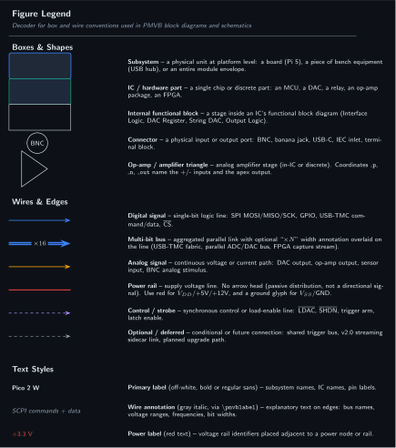
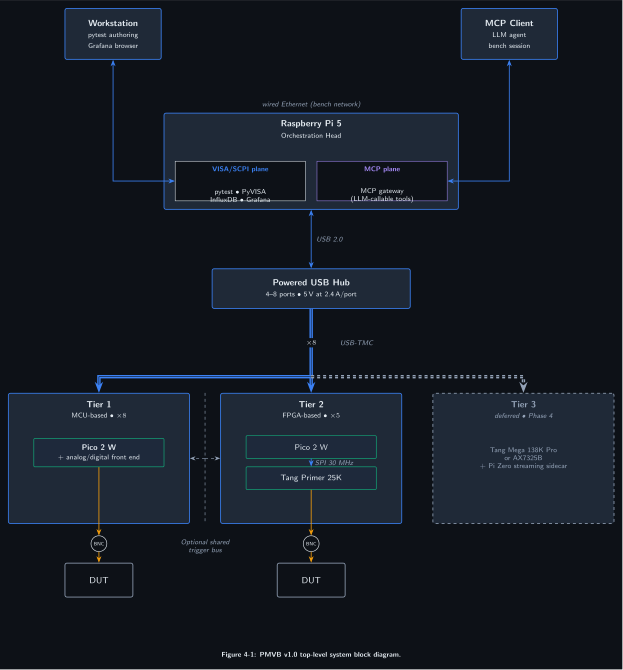

Version: 1.0 (May 2026) Author: Bradley Ward
*IDN? queries with no hand-coded driver registration.The Poor Man’s Validation Bench (PMVB) is a modular SCPI instrument platform that mirrors the architectural conventions of PXIe rack-and-module test systems at hobbyist budget. A Raspberry Pi 5 serves as the orchestration head, running PyVISA, pytest, and a time-series stack (InfluxDB, Grafana). Hot-swappable instrument modules attach over USB or Ethernet and present as independent SCPI-addressable instruments. Each module is purpose-built around a single function (digital I/O, voltage measurement, logic analysis, protocol exercise, and so on) using either a low-cost microcontroller (Raspberry Pi Pico 2 W) or a small FPGA (Sipeed Tang Primer 25K) as its physical layer.
PMVB is designed around two collaborating control planes. The VISA/SCPI plane is the authoritative instrument protocol and supports headless, vendor-portable test sequences driven from pytest. The MCP plane is an overlay that exposes the same instrument surface as LLM-callable tools, allowing agent-orchestrated bench sessions in which a human or AI assistant arms instruments, captures traces, and reasons about results in natural language. Both planes consume the same per-module command schema, so adding a new module exposes it through both surfaces with no double-implementation.
PMVB is a framework for building instruments rather than a single instrument. Each new module expands the platform’s capabilities without requiring changes to the orchestration layer or the host software stack. Module designs are kept clear of commercial-grade analog front ends by per-tier cost and complexity discipline rather than by a chassis-wide spending ceiling. The architectural priorities, in order, are: pedagogical clarity (the fewest moving parts that still expose the relevant engineering tradeoffs); end-to-end reproducibility (every measurement run produces a logged dataset and an automated report); and graceful upgrade paths (the orchestration layer, transport stack, and software stack are independent of any specific module’s implementation).
The figures in this and following sections use a consistent set of box and wire conventions documented in the legend below. Color encodes signal type (digital, analog, power, control); border encodes box type (subsystem, IC, internal block). Sequence and timing diagrams render in their native styles and are not covered by the legend.
Figure 4-0: PMVB Figure Legend

The platform decomposes into three physical layers.
The orchestration layer is a single Raspberry Pi 5 hosting the test framework (PyVISA, pytest), the time-series database (InfluxDB), the dashboard server (Grafana), the report generator (Jinja2 with Matplotlib), and the MCP gateway. The Pi 5 carries no instrument hardware of its own; it is a pure software orchestrator and data sink.
The transport layer connects the orchestration layer to the modules through a single primary bus. A powered USB hub (4 to 8 ports, 5 V at 2.4 A per port) hosts USB-TMC instrument bridges built on Raspberry Pi Pico 2 W; the SCPI command and measurement-data path runs over USB-TMC for every module in the chassis. An optional shared trigger bus, implemented as one or two GPIO lines daisy-chained between modules that require it, provides sub-microsecond synchronization for measurements that cannot tolerate software-arming jitter. External clients reach the Pi 5's InfluxDB, Grafana, and MCP gateway endpoints over the Pi 5's onboard wired Ethernet port.
The module layer attaches to the transport layer in three tiers. Tier 1 is microcontroller-based modules built on Pico 2 W that present as USB-TMC instruments. Tier 2 is FPGA-based modules built on the Sipeed Tang Primer 25K, bridged to the chassis through a Pico 2 W (USB-TMC, primary instrument transport) that masters the FPGA register file over SPI. Tier 3 is high-speed interface modules deferred until a larger FPGA is acquired.
Figure 4-1: PMVB v1.0 top-level system block diagram

Tier 3 modules (3A, 3B, 3C) are deferred to Phase 4 and follow a similar Pico + FPGA pattern with a larger FPGA; they are documented in section 7.7 and shown as a dashed placeholder in this diagram.
The control flow for a representative measurement, “characterize the noise floor of an external preamplifier,” exercises every architectural layer.
A pytest test, or equivalently an MCP-connected agent session, initiates the measurement. Both paths converge on the same per-module SCPI command set, so the orchestration logic is independent of the initiator. PyVISA dispatches OUTP ON and SOUR:VOLT 0.0 to Module 1D (Source-Measure Unit Lite) and a sweep of MEAS:VOLT:DC? queries to Module 1B (Voltage Measurement Unit), with optional parameter sweeps under pytest fixture control. Each measurement returns through the SCPI plane to the orchestration layer, which writes a row to InfluxDB tagged by instrument, channel, DUT identifier, run identifier, and timestamp.
The Grafana dashboard, keyed off the same tag taxonomy, updates in real time without further configuration. The pytest test produces a structured pass-fail outcome based on programmatic thresholds (for example, RMS noise less than 100 µV across the integration window). After the run completes, the report generator queries InfluxDB by run identifier and produces a PDF and HTML report containing measurement summaries, plots, and pass-fail records.
The MCP plane is available throughout the run for ad-hoc queries. An agent may inject a MEAS:VOLT:DC? request mid-sweep without disturbing the pytest state machine, because both control paths address the same module under the per-node concurrency rules described in section 9.
Figure 4-2: Representative Control Flow
The platform’s instrument modules are organized into three tiers by physical layer cost and complexity. Each module is identified by a two-character ID combining tier number and module letter within tier. The catalog below summarizes the planned module set; full per-module specifications appear in section 7.
Table 5-1: Module Catalog
| ID | Tier | Function | Host Platform | Transport | Build Status |
|---|---|---|---|---|---|
| 1A | 1 | Digital I/O Controller | Pico 2 W | USB-TMC | Planned (v1.0) |
| 1B | 1 | Voltage Measurement Unit | Pico 2 W + ADS1115 | USB-TMC | Planned (v1.0) |
| 1C | 1 | USB HID Protocol Analyzer | Pico 2 W (×2) | USB-TMC | Planned (v1.0) |
| 1D | 1 | Source-Measure Unit Lite | Pico 2 W + MCP4922 + ADS1115 | USB-TMC | Planned (v1.0) |
| 1E | 1 | Function Generator / AWG | Pico 2 W + MCP4922 | USB-TMC | Planned (v1.0) |
| 1F | 1 | HV Differential Probe | Pico 2 W + AD8421 + ADS1115 | USB-TMC | Planned (v1.1) |
| 1G | 1 | IR Capture and Transmit | Pico 2 W + TSOP4838 + IR LED | USB-TMC | Planned (v1.1) |
| 1H | 1 | Multi-Function DMM | Pico 2 W + ADS1256 + AD636 | USB-TMC | Planned (v1.0) |
| 2A | 2 | Logic Analyzer | Tang Primer 25K + Pico 2 W | USB-TMC | Planned (v1.0) |
| 2B | 2 | Protocol Exerciser / Analyzer | Tang Primer 25K + Pico 2 W | USB-TMC | Planned (v1.0) |
| 2C | 2 | Frequency Counter | Tang Primer 25K + Pico 2 W | USB-TMC | Planned (v1.0) |
| 2D | 2 | Ethernet MAC and Network Analyzer | Tang Primer 25K + PHY + Pico 2 W | USB-TMC | Planned (v1.0) |
| 2E | 2 | Mixed-Signal Digitizer / Oscilloscope | Tang Primer 25K + AD9226 AFE + Pico 2 W | USB-TMC | Planned (v1.0) |
| 3A | 3 | USB 2.0 Protocol Analyzer | Tang Mega 138K Pro / AX7325B + Pico 2 W | USB-TMC | Deferred |
| 3B | 3 | HDMI Sideband Analyzer | FPGA + breakout + Pico 2 W | USB-TMC | Deferred |
| 3C | 3 | USB-C CC Analyzer | FPGA + Pico 2 W | USB-TMC | Deferred |
Build status legend: Planned means designed but not yet started; In Design means RTL or firmware in progress; Built means hardware assembled and basic bring-up complete; Verified means full module test suite passing in simulation and on hardware; Deferred means gated on a hardware purchase outside the chassis budget.
Table 6-1: System-Level Specifications
| Parameter | Value | Notes |
|---|---|---|
| Maximum concurrent modules | 6 | Bounded by USB hub port count |
| Transport, Tier 1 (instrument) | USB-TMC, USB 2.0 full-speed (12 Mbps) | Pico 2 W native USB |
| Transport, Tier 2 (instrument) | USB-TMC, USB 2.0 full-speed (12 Mbps) | Pico 2 W bridge to Tang Primer 25K |
| Synchronization, v1.0 | Software arming | Inter-module arm jitter approximately 10 to 50 ms |
| Synchronization, v1.1 (planned) | Shared FPGA trigger line | Sub-microsecond hardware sync between modules wired to the bus |
| Chassis power budget | 50 W maximum | 5 V at 12 W from powered USB hub for Tier 1; per-module wall power for Tier 2 |
| SCPI command latency, USB | < 50 ms round trip (target) | USB-TMC overhead estimate |
| SCPI command latency, LAN | < 10 ms round trip (target) | Low-latency LAN estimate |
| Sustainable aggregate measurement rate | ~ 10 kSPS | Beyond which InfluxDB write buffering must be tuned |
Table 6-2: Tier 1 (Microcontroller-Based Module) Specifications
| Parameter | Value |
|---|---|
| ADC resolution | 16-bit (ADS1115) |
| ADC sample rate | up to 860 SPS |
| ADC voltage range | ±6.144 V differential, PGA-selectable |
| DAC resolution | 12-bit (MCP4922) |
| DAC voltage range | 0 to 4.096 V (internal Vref) |
| DC accuracy | ±0.2% typical, ±0.05% achievable with calibration constants |
| Channel count | 4 single-ended or 2 differential per ADC |
| Throughput to host | ~50 ms per host-paced measurement |
Table 6-3: Tier 2 (FPGA-Based Module) Specifications
| Parameter | Value |
|---|---|
| FPGA part | Sipeed Tang Primer 25K (Gowin GW5A-LV25MG121) |
| LUT4 capacity | ~23,040 |
| BSRAM capacity | ~1,008 Kbit (~126 KB) |
| Maximum capture sample rate | 100 MHz logic, channel-count dependent |
| Logic analyzer memory depth | ~63 K samples at 16-channel width |
| Frequency measurement range | 1 Hz to 100 MHz, sub-Hz resolution |
| Protocol coverage | I²C up to 1 MHz, SPI up to 50 MHz, UART up to 12 Mbps, CEC 400 bps |
| Throughput to host | 12 Mbps (USB-TMC over Pico 2 W bridge) |
Table 6-4: Tier 3 (High-Speed Interface) Specifications, Deferred
| Parameter | Value |
|---|---|
| Target FPGA | Sipeed Tang Mega 138K Pro or Alinx AX7325B (Kintex-7 325T) |
| USB 2.0 capture rate | 480 Mbps |
| HDMI sideband capture | DDC 100 kHz, CEC 400 bps |
| USB-C PD capture | 300 kHz BMC |
| Throughput to host | Pi 5 may be required as the bridge node for sustained Tier 3 capture |
The platform supports a four-tier upgrade path for analog front ends. Tier upgrade is a module swap; the orchestration layer, transport, and software stack are unchanged.
Table 6-5: ADC and DAC Scaling Path
| Tier | Part | Resolution | Sample Rate | Approximate Cost | Notes |
|---|---|---|---|---|---|
| Entry | ADS1115 | 16-bit | 860 SPS | $3 (breakout) | 76 µV resolution at ±2.048 V; used by 1B and 1D |
| Precision | ADS1256 | 24-bit | 30 kSPS | $10 (breakout) | Sub-microvolt resolution; precision variant of 1B |
| Waveform | AD9226 + FPGA | 12-bit | 65 MSPS | $10 to $15 | Audio FFT, switching-waveform capture |
| High-speed | AD9254 or HMCAD1511 + FPGA | 14-bit | 150 to 250 MSPS | $70 to $120 (custom PCB) | LVDS or JESD204B to FPGA; approaches commercial digitizer performance |
Table 6-6: Software Stack Version Pins
| Component | Version | Notes |
|---|---|---|
| Python | 3.11+ | Targets Pi 5 default Bookworm Python |
| PyVISA | 1.13+ | Vendor-neutral instrumentation library |
| PyVISA-py | 0.7+ | Pure Python VISA backend; supports USB-TMC and TCPIP |
| pytest | 8.x | Test runner with parametric fixtures |
| InfluxDB | 2.7+ | Default on 16 GB Pi 5 baseline |
| Grafana | 10.x OSS | Dashboard server |
| MCP SDK | Anthropic Python SDK, current stable | Updated with platform releases |
| TinyUSB | 0.16+ | Pico 2 W USB-TMC firmware base |
The platform’s design takes its cues from National Instruments’ PXIe rack-and-module test architecture, scaled down to hobbyist budget and a single workstation. Three principles drive every architectural decision.
Modules expose capability through a uniform interface. Every module, regardless of its physical layer (microcontroller, FPGA, or future custom PCB), presents a SCPI command surface and an MCP tool surface. The orchestration layer never branches on module identity at the transport level; it talks to a logic analyzer and a voltmeter through the same abstractions.
Transport is a deployment concern, not an architectural concern. USB-TMC and TCPIP::INSTR are interchangeable from the orchestration layer’s standpoint. A module’s transport is chosen at design time based on its host platform (Pico 2 W has native USB; Tang Primer 25K does not), not on the module’s role in the system. This keeps the path to a heterogeneous chassis open.
Test artifacts are first-class citizens. Every measurement run produces a logged dataset in InfluxDB, a structured pass-fail outcome in pytest, and a generated report. The platform is not finished when measurements happen; it is finished when measurements are reproducible from raw inputs by anyone with the same hardware.
Four constraints shape every component selection and architectural choice in this document.
Constraint 1: Per-tier cost discipline. Tier 1 modules target $7 to $15 BOM each. Tier 2 modules target $50 to $75 each (Tang Primer 25K, Pico 2 W bridge, plus per-module front end). Tier 3 modules form a separate budget pool whose ceiling is set by the FPGA platform acquired for the tier (approximately $200 for the Tang Mega 138K Pro, approximately $450 for the Alinx AX7325B). The chassis total is the sum of selected modules plus orchestration overhead and is allowed to grow as the catalog grows. The discipline is on per-module spend within tier, not on chassis total.
Two Tier 2 modules are documented exceptions to the $50 to $80 ceiling. Module 2E (Mixed-Signal Digitizer, approximately $124) earns the exception because the AD9226 ADC and analog front end are intrinsic to the module’s purpose and have no cheaper substitute at 25 MHz bandwidth and 12-bit resolution. Module 2D (Ethernet MAC with external PHY, approximately $105) earns the exception because the external PHY adds line-rate capability that the FPGA-only path cannot provide. Going over the per-tier target on a new module requires the same scrutiny as adding the module itself.
Constraint 2: Hand-solderable assembly. All custom PCBs must be assemblable with a temperature-controlled iron, fine-tip tweezers, no-clean flux, and an optional cheap hot-air station. This places SOIC-8/14/16 (1.27 mm pitch), SOT-23, TSSOP, and MSOP within scope; QFN with thermal pads requires hot-air rework but stays in scope; BGA is excluded. The constraint is enforced at component selection, not papered over with reflow ovens.
Constraint 3: Modular and transport-agnostic. No module’s design may presuppose what the orchestration host is, which transport it uses, or which other modules are connected. A module that requires a specific USB hub model, a specific Pi version, or a specific peer module is rejected on architectural grounds. The chassis is a collection of independent SCPI instruments connected by a shared transport layer.
Constraint 4: Every run reproducible from raw inputs. Every measurement run must produce a logged dataset, a structured test outcome, and a generated report. The dataset must be sufficient to regenerate the report; the outcome must be sufficient to regenerate the pass-fail decision. A measurement that exists only in conversation, in a chat log, or in a screenshot is not a measurement.
The platform exposes every instrument module through two independent control surfaces: the VISA/SCPI plane and the MCP plane. Both planes consume the same per-module command schema and reach the same physical hardware; neither is layered on top of the other.
The VISA/SCPI plane is the authoritative instrument protocol. It is the surface used by pytest test sequences, by headless test runners, and by any vendor-portable tooling that expects standard SCPI behavior. Commands follow IEEE 488.2 conventions (mandatory commands, error queue, status registers); subsystem hierarchies follow SCPI 1999 (CONF, MEAS, SOUR, CALC, SYST). The plane is deterministic, scriptable, and free of natural-language interpretation. Test code in this plane reads the same on every machine, by every author, on every run.
The MCP plane is an overlay that exposes the same instruments as LLM-callable tools. It is the surface used during interactive bench sessions, exploratory characterization, and any work where natural-language reasoning over measurement results is part of the workflow. The MCP server for each module advertises a small, schema-validated tool surface (for example, set_voltage(channel: int, volts: float)) generated mechanically from the module’s SCPI command schema. An agent calling set_voltage(0, 3.3) produces the same on-the-wire SCPI command as a pytest test issuing SOUR:VOLT 3.3, (@0).
The two planes coexist without locking. A pytest run can hold a sequence of measurements while an agent injects an ad-hoc query; both arrive at the module as SCPI commands and the module’s SCPI parser serializes them. The per-node concurrency rules in section 9 ensure that no module is asked to do two things at once on the same physical channel.
A third control plane, an inference plane running narrow ML models on a Raspberry Pi AI HAT+, was specified in earlier revisions and is reserved for a future release. It is out of scope for this document.
The orchestration layer is a single Raspberry Pi 5 16 GB with a Raspberry Pi M.2 HAT+ carrying a 512 GB NVMe SSD. The 16 GB memory budget absorbs concurrent dashboard, report-generation, and MCP-server workloads without per-component tuning. The M.2 SSD provides fast bulk storage for captured waveforms and InfluxDB shards, removing the SD-card I/O bottleneck that would otherwise apply to a microSD-only Pi 5.
The Pi 5 hosts six software services, all running natively under the same Raspberry Pi OS Bookworm instance.
PyVISA and PyVISA-py provide instrument discovery and SCPI dispatch. PyVISA-sim provides the simulation backend, generated mechanically from each module’s command schema. pytest is the test runner, with parametric fixtures keyed off the module catalog. InfluxDB 2.7+ is the time-series database (Flux query language, integrated web UI, ~600 MB resident under typical load); the 16 GB memory budget makes this the default choice with no per-component tuning required. Grafana 10.x OSS edition serves dashboards. The MCP gateway runs as a Python process exposing the module surface as MCP tools to local or LAN-connected clients. Captured waveforms and trace files land on the M.2 SSD rather than on a microSD card, so the trace_id pattern in section 9.4 stores files at fast paths the orchestration host can serve directly.
The Pi 5 does not host any instrument hardware. It does not connect to DUT-facing analog or digital signals; it does not provide bench power; it does not act as a USB device. All instrument I/O happens at the module layer, accessed through the transport layer. This separation lets the Pi 5 be replaced (with a Pi 6, an Intel mini PC, or a desktop workstation) without changing any module design.
Tier 1 modules use the Raspberry Pi Pico 2 W (RP2350 dual Cortex-M33 with optional dual Hazard3 RISC-V cores, 520 KB SRAM, 4 MB external flash, native USB device controller, 2.4 GHz Wi-Fi and BLE) as their host platform. All Tier 1 modules present to the orchestration layer as USB-TMC instruments through the chassis-wide powered USB hub. The Pico 2 W runs bare-metal C firmware built against the Pico SDK and TinyUSB; the SCPI parser is generated mechanically from each module’s YAML command schema (see section 8).
Each Tier 1 module is a single Pico 2 W with its own analog or digital front end. Persistent state (calibration constants, module identity) lives in the Pico's onboard 4 MB flash. ssh debug access and bench-level admin services run from the Pi 5 orchestration head.
Module 1A provides programmable digital I/O, PWM generation, and frequency measurement on a Pico 2 W with no external peripherals. The eight GPIO lines are independently configurable as inputs or outputs at 3.3 V CMOS levels, and are 5 V tolerant via the chassis-supplied bidirectional level shifter when 5 V interfacing is required. Two PWM outputs are driven by the RP2350’s PWM peripheral; one dedicated frequency-counter input uses a PIO state machine implementing reciprocal counting with a 32-bit accumulator.
Block Diagram, Module 1A
Table 7-1: Module 1A Specifications
| Parameter | Value |
|---|---|
| GPIO channels | 8 |
| GPIO logic level | 3.3 V CMOS, 5 V tolerant via level shifter |
| GPIO direction | Independently configurable per channel |
| PWM channels | 2 |
| PWM frequency range | 100 kHz to 50 MHz |
| PWM duty cycle resolution | 8-bit |
| Frequency-counter inputs | 1 |
| Frequency measurement range | 1 Hz to 100 MHz |
| Frequency measurement resolution | 1 Hz at 1 s gate (sub-Hz at longer gates) |
Closest commercial equivalent: NI PXIe-6570 Digital Pattern Instrument at hobbyist scale. The 6570 has 32 channels with programmable VOH/VOL and per-channel timing engines; Module 1A has 8 channels, fixed 3.3 V CMOS levels (5 V tolerant via the chassis level shifter), and host-paced timing.
SCPI Command Set, Module 1A
*IDN? returns identification stringDIGI:OUTP <chan>, <0|1> sets output stateDIGI:INP? <chan> reads input stateDIGI:DIR <chan>, <IN|OUT> sets channel directionPWM:FREQ <chan>, <freq> sets PWM frequency in hertzPWM:DUTY <chan>, <0..255> sets PWM duty cyclePWM:STAT <chan>, <ON|OFF> enables or disables a channelFREQ:MEAS? <gate_ms> measures frequency on dedicated inputSample Test, Module 1A
def test_dut_reset_pulse(dio):
"""Pulse the DUT reset line and verify the DUT echoes back at 1 kHz on input pin 1."""
dio.write('DIGI:DIR 0, OUT')
dio.write('DIGI:OUTP 0, 1')
time.sleep(0.001)
dio.write('DIGI:OUTP 0, 0')
freq = float(dio.query('FREQ:MEAS? 1000'))
assert 990 <= freq <= 1010, f'Echo freq {freq} Hz outside 1 kHz +/- 1%'
Connector Pinout, Module 1A DUT Header
| Pin | Signal | Direction | Notes |
|---|---|---|---|
| 1, 16 | GND | — | reference ground (shared with chassis) |
| 2 | +3V3 | Output | for DUT pull-ups, 100 mA max |
| 3-10 | GPIO 0-7 | Bidir | 3.3 V CMOS, 5 V tolerant via chassis level shifter |
| 11, 12 | PWM 0, PWM 1 | Output | 100 kHz to 50 MHz, 8-bit duty |
| 13 | FREQ_IN | Input | 1 Hz to 100 MHz, 3.3 V CMOS |
| 14, 15 | TRIG_OUT, TRIG_IN | Bidir | chassis trigger bus (optional) |
Table 7-2: Module 1A BOM
| Item | Approximate Cost | Notes |
|---|---|---|
| Raspberry Pi Pico 2 W | $7 | RP2350 host |
| 0.1" pin headers | $1 | DUT-side connection |
| 3D-printed enclosure | $1 | PETG print cost |
| Total | ~$9 |
Module 1B is a four-channel single-ended (or two-channel differential) voltmeter using a Texas Instruments ADS1115 16-bit Σ-Δ ADC on a SparkFun-style breakout connected to the Pico 2 W over I²C. The PGA-selectable range covers ±0.256 V to ±6.144 V; the noise floor at the most sensitive range is approximately 76 µV per LSB with a roughly 25 µV RMS noise floor after averaging. Calibration constants for offset and gain are stored in the Pico’s external flash and applied by firmware before SCPI return values.
A precision variant of Module 1B substitutes the ADS1115 for an ADS1256 (24-bit Σ-Δ, 30 kSPS, sub-microvolt resolution) on an SPI bus. Firmware and SCPI command surface are identical except for the sample rate and resolution metadata returned by MEAS:VOLT:DC? queries.
Block Diagram, Module 1B
Table 7-3: Module 1B Specifications (Standard Variant)
| Parameter | Value |
|---|---|
| ADC | ADS1115, 16-bit Σ-Δ |
| Channels | 4 single-ended or 2 differential |
| Voltage range | ±0.256 V to ±6.144 V (PGA selectable) |
| Resolution at most-sensitive range | 7.8125 µV per LSB |
| Sample rate | 8 to 860 SPS, configurable |
| DC accuracy | ±0.2% typical, ±0.05% achievable with calibration |
| Input impedance | ~10 MΩ |
Closest commercial equivalent: NI PXIe-4081 DMM at hobbyist scale. The 4081 is 7½-digit and supports V/I/R/AC/DC; Module 1B is 16-bit DC voltage only, intended for parallel rail monitoring. The DMM-class equivalent in PMVB is Module 1H.
SCPI Command Set, Module 1B
*IDN? identificationMEAS:VOLT:DC? <chan> single voltage measurement (auto-config)CONF:VOLT:DC:RANG <chan>, <range> sets PGA rangeCONF:VOLT:DC:RATE <chan>, <SPS> sets sample rateMEAS:VOLT:DC:AVER? <chan>, <n> averaged measurement of n samplesCALC:CAL:OFFS <chan>, <volts> sets offset calibrationCALC:CAL:GAIN <chan>, <factor> sets gain calibrationSample Test, Module 1B
def test_3v3_rail_within_tolerance(volt):
"""Verify a known 3.3 V regulator output is within 5%."""
volt.write('CONF:VOLT:DC:RANG 0, 6.144')
reading = float(volt.query('MEAS:VOLT:DC:AVER? 0, 16'))
assert 3.135 <= reading <= 3.465, f'3.3 V rail measured at {reading:.3f} V'
Table 7-4: Module 1B BOM (Standard Variant)
| Item | Approximate Cost | Notes |
|---|---|---|
| Raspberry Pi Pico 2 W | $7 | |
| ADS1115 breakout | $5 | Adafruit, SparkFun, or CJMCU |
| Hookup wire and headers | $1 | I²C bus and channel inputs |
| 3D-printed enclosure | $1 | |
| Total | ~$14 |
The precision variant replaces the ADS1115 breakout ($5) with an ADS1256 breakout ($10); module total approximately $49 (standard variant + ADS1256 upgrade).
Module 1C captures USB Human Interface Device traffic from a device under test and decodes HID descriptors and reports for inspection. The module pairs two Pico 2 W boards. The first (chassis-facing) Pico presents as the USB-TMC instrument over the chassis powered USB hub. The second (DUT-facing) Pico runs TinyUSB in host mode and enumerates the device under test. The two Picos communicate over a UART link at 1 Mbps. This split avoids the dual-role USB complexity that would arise from trying to use a single Pico as both USB-TMC device (uplink) and USB host (downlink) simultaneously, since the RP2350’s USB controller supports either role but not both on the same port.
The DUT-facing Pico captures full HID descriptors, parses report descriptors, and forwards either decoded reports or raw bytes back to the chassis-facing Pico for SCPI response. Capture buffer is approximately 32 KB on the DUT-facing Pico; longer captures stream live to the chassis side over UART.
Block Diagram, Module 1C
Table 7-5: Module 1C Specifications
| Parameter | Value |
|---|---|
| DUT USB connection | USB 2.0 full-speed (12 Mbps) host |
| Devices supported | HID class (mouse, keyboard, gamepad, generic HID) |
| Descriptor parsing | Full device, configuration, interface, HID, report |
| Report capture | Live streaming up to 1000 reports per second |
| Capture buffer | 32 KB on-board, plus UART streaming |
Closest commercial equivalent: dedicated USB protocol analyzers (Beagle USB 12, Total Phase USB Power Delivery Analyzer); not a standard NI PXIe instrument. Module 1C provides hobbyist-scale HID-class capture using TinyUSB host on a Pico 2 W.
SCPI Command Set, Module 1C
*IDN? identificationUSB:HID:ENUM? lists connected device VID, PID, and string descriptorsUSB:HID:DESC? <descriptor_type> returns raw descriptor bytesUSB:HID:REPORT:STAR starts report captureUSB:HID:REPORT:STOP stops report captureUSB:HID:REPORT:DATA? returns captured reports as decoded JSONSample Test, Module 1C
import json
def test_mouse_enumeration(hid):
"""Verify a Logitech HID mouse enumerates with the expected VID and HID class."""
devices = json.loads(hid.query('USB:HID:ENUM?'))
mouse = next((d for d in devices if d['vid'] == 0x046D), None)
assert mouse is not None, 'No Logitech device found on DUT port'
assert mouse['interface_class'] == 0x03, 'DUT does not advertise as HID class'
Table 7-6: Module 1C BOM
| Item | Approximate Cost | Notes |
|---|---|---|
| Raspberry Pi Pico 2 W (chassis-facing) | $7 | USB-TMC instrument |
| Raspberry Pi Pico 2 W (DUT-facing) | $7 | USB host for DUT |
| USB-A receptacle for DUT | $2 | Hand-soldered or breakout |
| Hookup wire and headers | $2 | UART link, USB host wiring |
| 3D-printed enclosure | $1 | |
| Total | ~$19 |
Module 1D provides synchronized voltage sourcing and voltage/current measurement for IV-curve generation, low-power source-measure characterization, and transient response capture. The module pairs a Pico 2 W with a Microchip MCP4922 dual 12-bit DAC (SPI) and an ADS1115 ADC (I²C). Two source channels, each with an op-amp output stage providing 0 to 5 V with software-selectable gain to ±10 V, drive the DUT. Two voltage measurement channels and two current measurement channels (via 1 Ω shunt and differential ADC reading) close the loop on the DUT response.
The “Lite” qualifier differentiates the module from a full bench SMU; current capability is bounded at ±30 mA by the op-amp output stage and shunt heat dissipation. A higher-current variant (replacing the op-amp output with an LM317-based regulator) extends capability to roughly ±500 mA but reduces voltage range and accuracy.
Block Diagram, Module 1D
Table 7-7: Module 1D Specifications
| Parameter | Value |
|---|---|
| DAC | MCP4922 dual 12-bit SPI |
| DAC update rate | 8 µs settling per channel |
| Source channels | 2 |
| Source voltage range | 0 to 5 V (default), ±10 V with gain |
| Source resolution | 1.22 mV per LSB at 0 to 5 V range |
| Voltage measurement channels | 2 |
| Current measurement channels | 2 (via 1 Ω shunt and differential ADC) |
| Current measurement range | ±30 mA, 1 µA resolution |
| ADC | ADS1115, 16-bit |
| Sweep modes | Linear, log, list |
Closest commercial equivalent: NI PXIe-4137 SMU (single-channel ±200 V / ±1 A) at hobbyist scale. Module 1D is two channels at ±10 V / ±30 mA, intended for small-signal IV characterization (diodes, LEDs, low-power transistors), not power-electronics work. The four-channel NI PXIe-4143 SMU at ±24 V / ±0.5 A is a closer architectural match in channel count, but still 15× higher current capability.
SCPI Command Set, Module 1D
*IDN? identificationSOUR:VOLT <chan>, <volts> sets source voltageOUTP <chan>, <ON|OFF> enables or disables channel outputMEAS:VOLT? <chan> measures DUT voltageMEAS:CURR? <chan> measures DUT currentSOUR:VOLT:SWEEP <chan>, <start>, <stop>, <points>, <dwell_ms> performs a linear sweepMEAS:VOLT:SWEEP? <chan> returns sweep voltage resultsMEAS:CURR:SWEEP? <chan> returns sweep current resultsTiming Diagram, Module 1D Sweep
Sample Test, Module 1D
import json
def test_diode_iv_curve(smu):
"""Capture an IV curve on a Si diode and verify forward voltage between 0.55 V and 0.75 V."""
smu.write('SOUR:VOLT:SWEEP 0, 0.0, 0.8, 41, 10')
smu.write('SOUR:VOLT:SWEEP:STAR 0')
voltages = json.loads(smu.query('MEAS:VOLT:SWEEP? 0'))
currents = json.loads(smu.query('MEAS:CURR:SWEEP? 0'))
threshold = next(v for v, i in zip(voltages, currents) if i > 1e-3)
assert 0.55 <= threshold <= 0.75, f'Si diode Vf {threshold:.3f} V outside expected range'
Table 7-8: Module 1D BOM
| Item | Approximate Cost | Notes |
|---|---|---|
| Raspberry Pi Pico 2 W | $7 | |
| MCP4922 breakout | $4 | Dual 12-bit DAC |
| ADS1115 breakout | $5 | 16-bit ADC |
| MCP6232 op-amp (DIP) | $2 | Output stage |
| 1 Ω current shunt resistors (qty 2) | $1 | Through-hole |
| Hookup wire, headers, perfboard | $2 | |
| 3D-printed enclosure | $1 | |
| Total | ~$22 |
Module 1E is a programmable function generator and arbitrary waveform generator covering DC to 10 MHz at 12-bit resolution. The module pairs a Pico 2 W with an Analog Devices AD9742 12-bit 210 MSPS current-output DAC, driven over a 12-bit parallel data bus from the Pico's PIO + DMA at 30 to 50 MSPS update rate. The AD9742's complementary current outputs feed 25 Ω termination resistors and a 5th-order Butterworth reconstruction filter at ~12 MHz cutoff, then an Analog Devices AD8056 high-speed op-amp configured as a differential-to-single-ended converter with gain to ±10 V. The single-ended output passes through a three-position impedance switch (50 Ω / 600 Ω / 10 kΩ) selected by three Coto 9007 SPST reed relays driven from Pico GPIOs. Single-channel BNC output. Standard waveforms (sine, square, triangle, ramp, noise, multitone) are generated by streaming samples from the Pico's flash or computed on the fly via a phase-accumulator DDS in firmware; arbitrary waveforms are uploaded as 12-bit sample arrays into Pico SRAM up to ~256 K samples deep.
The 10 MHz upper bandwidth limit is bounded by the Pico's PIO + DMA throughput at the 50 MSPS DAC update rate (5× oversampling for clean reconstruction-filter image rejection of ~50 dB at the first alias near 40 MHz) and by the AD8056's 1400 V/µs slew rate, which provides about 2.2× margin for full-amplitude ±10 V sines at 10 MHz. Frequency accuracy is bounded by the Pico's onboard crystal at ±20 ppm, improvable to ±2 ppm by chaining the trigger bus to Module 2C's TCXO reference. Module 1E pairs with Module 2E to enable the worked-example characterization recipes documented in section 10 (swept-sine THD, frequency response, intermodulation distortion); the wider bandwidth also enables clock generation for digital characterization (1–10 MHz square waves) and current-limited bias-mode voltage injection (10 kΩ source impedance).
Block Diagram, Module 1E
See the Module 1E design document for the full functional block diagram, AD9742 internal architecture, typical-application schematic, pin assignments, and BOM with verified Digi-Key / Microcenter prices.
Table 7-27: Module 1E Specifications
| Parameter | Value |
|---|---|
| DAC | AD9742 12-bit current-output, 210 MSPS-capable, 28-TSSOP |
| DAC update rate (v1.1 baseline) | 30–50 MSPS via Pico 2 W PIO + DMA (parallel 12-bit + CLK) |
| Channels | 1 single-ended (channel B reserved for differential / sync expansion) |
| Standard waveforms | Sine, square, triangle, ramp, noise, multitone, swept sine |
| Arbitrary waveform depth | up to 32 K samples streamed via DMA (extendable from host RAM) |
| Output range | ±10 V (AD8056 op-amp differential-to-single-ended) |
| Output impedance | 50 Ω / 600 Ω / 10 kΩ switchable (3× Coto 9007-05-01 reed relays) |
| Frequency range | DC to 10 MHz (sine), DC to ~5 MHz (arbitrary, slew-limited) |
| Slew rate | 1400 V/µs (AD8056-limited), 2.2× margin for ±10 V at 10 MHz |
| Reconstruction filter | 5th-order Butterworth, ~12 MHz cutoff, ~50 dB image rejection |
| Frequency accuracy | ±20 ppm (Pico crystal); ±2 ppm with external 10 MHz reference |
| Amplitude resolution | 12-bit (~5 mV at 10 V FS) |
| THD | <0.1 % audio band; <0.5 % to 1 MHz (filter and AD8056 distortion limited) |
Closest commercial equivalent: NI PXIe-5413 Waveform Generator at hobbyist scale. The 5413 covers DC to 10 MHz with 16-bit resolution and arbitrary waveform memory in the millions of samples; Module 1E v1.1 covers the same DC-to-10 MHz frequency span at 12-bit resolution with a 32 K sample DMA window, three switchable output impedances (50 Ω / 600 Ω / 10 kΩ), and ±10 V drive. Module 1E pairs with Module 2E for FFT-based audio analysis, with the high-impedance scope modules for swept Bode characterization, and with the 600 Ω setting for legacy line-level audio gear.
SCPI Command Set, Module 1E
*IDN? identificationSOUR:FUNC <SIN|SQU|TRI|RAMP|NOIS|MULT|ARB> selects waveform shapeSOUR:FREQ <hz> sets frequencySOUR:VOLT <volts_pp> sets peak-to-peak amplitudeSOUR:VOLT:OFFS <volts> sets DC offsetSOUR:PHAS <degrees> sets phaseSOUR:ARB:UPLD <samples> uploads arbitrary waveformOUTP <ON|OFF> enables or disables outputSOUR:SWEEP:CONF <start_hz>, <stop_hz>, <time_s>, <LOG|LIN> configures swept sineSOUR:SWEEP:STAR starts sweepSOUR:MULT:UPLD <freqs>, <amps> uploads multitone definitionTiming Diagram, Module 1E Swept Sine
Sample Test, Module 1E
import numpy as np
def test_awg_sine_amplitude(awg, scope):
"""Verify the AWG generates a 1 kHz sine at the requested amplitude (within 5%)."""
awg.write('SOUR:FUNC SIN')
awg.write('SOUR:FREQ 1000')
awg.write('SOUR:VOLT 2.0')
awg.write('OUTP ON')
samples = scope.query_binary_values('DIG:DATA? 0', datatype='f')
rms = np.sqrt(np.mean(np.array(samples) ** 2))
expected_rms = 2.0 / (2 * np.sqrt(2))
assert abs(rms - expected_rms) < 0.05, f'RMS {rms:.3f} V, expected {expected_rms:.3f} V'
awg.write('OUTP OFF')
Table 7-28: Module 1E BOM
| Item | Approximate Cost | Notes |
|---|---|---|
| Raspberry Pi Pico 2 W | $5.99 | Microcenter; PIO + DMA drives the parallel DAC bus |
| AD9742ARUZ (12-bit DAC, 28-TSSOP) | $14.80 | Digi-Key; Analog Devices current-output DAC |
| AD8056ARZ (dual op-amp, SOIC-8) | $6.27 | Digi-Key; differential-to-single-ended, 1400 V/µs |
| Coto 9007-05-01 reed relay × 3 | $11.97 | Digi-Key; 50 Ω / 600 Ω / 10 kΩ output impedance switching |
| Reconstruction filter passives (5th-order Butterworth) | $3 | 1 % C0G capacitors and ±1 % inductors, ~12 MHz cutoff |
| Termination + feedback resistors (1 % thin-film) | $2 | 25 Ω terminations, 1 kΩ / 10 kΩ op-amp network |
| Bypass and decoupling capacitors | $2 | 0.1 µF + 10 µF on AD9742 and AD8056 rails |
| BNC output connector + hookup wire / headers / perfboard | $4 | Front panel and assembly |
| 3D-printed enclosure | $2 | Half-width module shell |
| Total | ~$53 | Digi-Key + Microcenter verified, May 2026 |
Module 1F is a v1.1 addition that adapts the Module 1B voltmeter for high-voltage differential measurement. The module presents a differential input pair (insulated banana jacks) buffered by a precision instrumentation amplifier (Analog Devices AD8421 or Texas Instruments INA128) with a 100:1 input attenuator network providing ±300 V differential range. The attenuator divides the input by 100 before the instrumentation amp; the amp drives an ADS1115 ADC for digitization.
Isolation between the high-voltage input and the chassis-side electronics is provided by the attenuator network alone in v1.1; full galvanic isolation (optical signal coupling and transformer-isolated DC-DC for the front-end power) is reserved for a future v1.2 variant. The v1.1 form is suitable for tube amp B+ rail measurement, line-voltage measurement, and any DUT where the common-mode voltage exceeds Module 1B’s ±6.144 V range. The v1.1 form must not be used to measure voltages above 300 V DC or 212 V RMS, and must not be used where galvanic isolation from chassis ground is required for safety; the v1.2 isolated variant is the correct path for those cases.
Status: Planned, v1.1.
Block Diagram, Module 1F
Table 7-29: Module 1F Specifications
| Parameter | Value |
|---|---|
| Input topology | Differential, two-pin |
| Attenuator ratio | 100:1 (precision matched, ±0.1%) |
| Input voltage range | ±300 V differential |
| Common-mode rejection | > 80 dB at DC, > 60 dB at 60 Hz |
| Bandwidth | DC to 100 kHz |
| ADC | ADS1115, 16-bit |
| DC accuracy | ±0.5% typical, ±0.1% with calibration |
| Input impedance | 10 MΩ differential |
Closest commercial equivalent: high-voltage differential probes (Tektronix TMDP0200, Pico Technology TA044) used with general-purpose digitizers. Not a standalone NI PXIe instrument. Module 1F provides up to ±300 V at 16-bit, suitable for tube amp B+ rails and line-voltage measurement; commercial probes typically reach ±1000 V or higher.
SCPI Command Set, Module 1F
*IDN? identificationMEAS:VOLT:HV? differential voltage measurementCONF:VOLT:HV:RANG <range> sets ADC PGA rangeMEAS:VOLT:HV:AVER? <n> averaged measurement of n samplesSample Test, Module 1F
def test_psu_b_plus_rail(hv_probe):
"""Verify B+ rail on a tube amp is in the expected 230 to 270 V band."""
hv_probe.write('CONF:VOLT:HV:RANG 6.144')
reading = float(hv_probe.query('MEAS:VOLT:HV:AVER? 16'))
assert 230 <= reading <= 270, f'B+ rail at {reading:.1f} V, expected ~250 V +/- 20 V'
Connector Pinout, Module 1F
| Jack | Signal | Voltage Range | Notes |
|---|---|---|---|
| HV+ | Differential High | ±300 V relative to HV− | safety-rated insulated banana, sleeved (4 mm shrouded) |
| HV− | Differential Low | ±300 V relative to HV+ | same physical spec as HV+ |
| GND | Chassis ground | — | tie to chassis if measurement requires single-ended reference; do not tie if DUT is hot-chassis |
Safety: Module 1F v1.1 does not provide galvanic isolation between the HV input pair and the chassis-side electronics; the 100:1 attenuator network is the only barrier. Maximum input is ±300 V DC or 212 V RMS. For voltages above this, or for hot-chassis DUTs, use the v1.2 isolated variant when available.
Table 7-30: Module 1F BOM
| Item | Approximate Cost | Notes |
|---|---|---|
| Raspberry Pi Pico 2 W | $7 | |
| AD8421 instrumentation amp | $10 | INA128 alternative |
| 100:1 attenuator (1% precision resistors, matched) | $4 | |
| ADS1115 breakout | $5 | |
| Banana jacks, insulated, 600 V rated (qty 2) | $4 | |
| Hookup wire, headers | $2 | |
| 3D-printed enclosure with safety creepage spacing | $3 | |
| Total | ~$35 |
Module 1G is a v1.1 addition that captures and transmits infrared remote-control signals, supporting decoded-protocol identification and raw-timing capture. The module pairs a Pico 2 W with a Vishay TSOP4838 IR receiver (38 kHz carrier, the dominant consumer IR frequency), an IR LED with current-limited transmit driver, and a PIO state machine that samples received signals at 1 MHz and drives transmitted signals with sub-microsecond accuracy. Standard protocols supported in firmware include NEC, Sony SIRC, RC5, RC6, JVC, and Samsung; a raw mode captures arbitrary IR timing for protocols not explicitly supported.
The intended use cases are consumer electronics debug (capturing remote codes from a Firestick or TV remote, injecting control commands during boot scripting, characterizing IR receiver sensitivity at varying distances). Carrier frequencies other than 38 kHz are supported in firmware via the PIO state machine but require the appropriate TSOP variant (TSOP4840 for 40 kHz, TSOP4856 for 56 kHz) on the receive side.
Status: Planned, v1.1.
Block Diagram, Module 1G
Table 7-31: Module 1G Specifications
| Parameter | Value |
|---|---|
| Receiver | Vishay TSOP4838 (38 kHz default) |
| Receive sample rate | 1 MHz via PIO |
| Decoded protocols | NEC, Sony SIRC, RC5, RC6, JVC, Samsung; raw mode otherwise |
| Transmit LED | High-power IR LED (e.g., SFH4715A), ~100 mA peak |
| Transmit timing accuracy | < 1 µs jitter via PIO |
| Carrier frequency, transmit | 30 to 60 kHz software-selectable |
| Range | ~5 m receive, ~3 m transmit |
Closest commercial equivalent: not a standard NI PXIe instrument; closest analogs are universal remote programmers (Logitech Harmony Hub) or laboratory IR analyzers used in consumer electronics test. Module 1G targets consumer electronics debug at hobbyist scale.
SCPI Command Set, Module 1G
*IDN? identificationIR:RX:DEC? returns decoded received signal (protocol and payload)IR:RX:RAW? <duration_ms> returns raw timing captureIR:TX:SEND <protocol>, <payload> sends formatted commandIR:TX:RAW <timing_array> sends raw timing sequenceIR:CAR:FREQ <hz> sets carrier frequency for transmitTiming Diagram, Module 1G NEC Decode
Signal-Level Timing, NEC IR Protocol
Sample Test, Module 1G
import json
def test_firestick_remote_codes(ir):
"""Capture button presses from a Firestick remote and verify NEC protocol with expected address."""
msg = json.loads(ir.query('IR:RX:DEC?'))
assert msg['protocol'] == 'NEC', f"Expected NEC, got {msg['protocol']}"
assert msg['address'] == 0xBF, f"Unexpected address {hex(msg['address'])}"
Table 7-32: Module 1G BOM
| Item | Approximate Cost | Notes |
|---|---|---|
| Raspberry Pi Pico 2 W | $7 | |
| TSOP4838 IR receiver | $1 | 38 kHz |
| IR LED (SFH4715A or similar) | $1 | |
| Transistor driver and current-limit resistor | $1 | 2N3904 or BSS138 |
| Hookup wire, headers | $1 | |
| 3D-printed enclosure | $1 | |
| Total | ~$12 |
Module 1H is a multi-function digital multimeter combining DC voltage (extending Module 1B's range and resolution), AC voltage (true-RMS, audio band), DC current (multi-range via shunts), resistance (2-wire and 4-wire), and frequency measurement into a single instrument. The module is built on a Pico 2 W bridge driving a Texas Instruments ADS1256 24-bit Σ-Δ ADC for low-noise voltage and current measurement, an Analog Devices AD636 true-RMS-to-DC converter for AC voltage, and a relay-switched precision divider/shunt network for ranging. Four banana jacks (V/Ω-Hi, V/Ω-Lo, A-Hi, A-Lo) provide DUT connection; 4-wire (Kelvin) resistance routes through the V/Ω jacks for sense and the A jacks for source.
Module 1H is intentionally complementary to Module 1B. Module 1B remains the simple multi-channel DC voltmeter on a slow ADS1115 ADC suitable for parallel rail monitoring; Module 1H is the DMM-class instrument for one-at-a-time precision measurements across all common DMM modes. Both modules can be installed in the chassis concurrently.
Block Diagram, Module 1H
Table 7-36: Module 1H Specifications
| Parameter | Value |
|---|---|
| ADC | ADS1256, 24-bit Σ-Δ |
| DC voltage range | ±0.1 V, ±1 V, ±10 V, ±20 V (4 ranges, relay-switched) |
| DC voltage resolution | ~1 µV at most-sensitive range |
| AC voltage range | 100 mV to 20 V RMS, 20 Hz to 100 kHz |
| AC RMS converter | AD636 |
| DC current range | ±10 mA, ±100 mA, ±1 A (3 ranges via shunts) |
| Resistance range | 1 Ω to 1 MΩ (4 ranges, 2-wire or 4-wire) |
| Frequency input | 1 Hz to 100 kHz audio band (use Module 2C for higher) |
| DC accuracy | ±0.05% typical with calibration |
| Sample rate | up to 30 kSPS (ADS1256 limit) |
Closest commercial equivalent: NI PXIe-4081 DMM at hobbyist scale. The 4081 is 7½-digit (~23-bit equivalent), 1.8 MS/s digitizer-mode-capable, and covers all modes; Module 1H is 24-bit on the slow ADC, audio-band on AC RMS, with 4 voltage ranges, 3 current ranges, and 4 resistance ranges. A useful "lab notebook" DMM that closes the multi-function-measurement gap left by the ±6 V single-mode Module 1B.
SCPI Command Set, Module 1H
*IDN? identificationMEAS:VOLT:DC? DC voltage on V/Ω jacks (auto-range)MEAS:VOLT:AC? AC voltage RMS (audio band)MEAS:CURR:DC? DC current on A jacksMEAS:CURR:AC? AC current RMSMEAS:RES? 2-wire resistanceCONF:RES:WIRE <2|4> select 2-wire or 4-wire resistanceMEAS:FREQ? frequency on V/Ω jacks (audio band only)CONF:VOLT:DC:RANG <range> set DC voltage rangeCONF:CURR:DC:RANG <range> set DC current rangeCONF:RES:RANG <range> set resistance rangeSample Test, Module 1H
def test_reference_resistor_4wire(dmm):
"""Verify a 1 kΩ +/- 1% reference resistor reads correctly in 4-wire mode."""
dmm.write('CONF:RES:RANG 10000')
dmm.write('CONF:RES:WIRE 4')
reading = float(dmm.query('MEAS:RES?'))
assert 990 <= reading <= 1010, f'Resistor measured {reading:.1f} ohm, expected 1 kohm +/- 1%'
Table 7-37: Module 1H BOM
| Item | Approximate Cost | Notes |
|---|---|---|
| Raspberry Pi Pico 2 W | $7 | |
| ADS1256 breakout | $10 | 24-bit Σ-Δ ADC |
| AD636 true-RMS converter | $5 | AC RMS path |
| AD8421 instrumentation amplifier | $5 | Differential input buffer |
| Precision divider resistors (0.1%) | $4 | Voltage range network |
| Range-switching reed relays (qty 4) | $6 | Voltage and current range selection |
| Current shunt resistors (0.1 Ω, 1 Ω, 10 Ω, 0.05%) | $3 | DC and AC current path |
| Banana jacks insulated, 600 V (qty 4) | $8 | V/Ω-Hi, V/Ω-Lo, A-Hi, A-Lo |
| Hookup wire, headers, perfboard | $3 | |
| 3D-printed enclosure | $2 | |
| Total | ~$53 |
Tier 2 modules implement instrument logic in HDL on the Sipeed Tang Primer 25K. The Tang Primer 25K hosts a Gowin GW5A-LV25MG121 FPGA with approximately 23,040 LUT4, 1,008 Kbit BSRAM, and 180 Kbit distributed shift-register memory. The dev board provides USB-C power, JTAG programming, an onboard 50 MHz oscillator, and 88 user-accessible I/O pins through expansion headers.
Each Tier 2 module pairs the Tang Primer 25K FPGA with a Pico 2 W. The Pico 2 W is the canonical SCPI bridge: it presents as a USB-TMC instrument to the chassis-wide powered USB hub, runs the SCPI parser in bare-metal C against the module's YAML command schema, and acts as SPI master to the FPGA's instrument register file at approximately 30 MHz. Calibration constants and module identity live in the Pico's onboard 4 MB flash. The canonical instrument data path is FPGA to Pico to USB-TMC to Pi 5.
FPGA resource estimates for each Tier 2 module are conservative and target less than 50 percent fabric utilization to leave headroom for module evolution and shared infrastructure (clock domain crossings, register file, SPI slave, debug ports). Memory budgets target less than 80 percent BSRAM utilization for the same reason.
Module 2A captures sixteen single-ended digital channels at sample rates up to 100 MHz with configurable triggers and post-capture protocol decoding. Triggers include edge, level, multi-channel pattern, and sequence (state-machine triggers up to 8 states deep). Captures land in BSRAM as a circular buffer; the Pico bridge transfers captures to the host on demand at USB-TMC throughput.
Block Diagram, Module 2A
Table 7-9: Module 2A Specifications
| Parameter | Value |
|---|---|
| Channels | 16 single-ended |
| Logic level | 3.3 V CMOS, 5 V tolerant via level shifter |
| Maximum sample rate | 100 MHz |
| Memory depth | ~63 K samples at 16-channel width |
| Triggers | Edge, level, multi-channel pattern, 8-state sequence |
| Post-capture decoders | SPI, I²C, UART (firmware-resident) |
| Capture transfer time | ~85 ms full buffer at USB-TMC 12 Mbps |
Closest commercial equivalent: NI PXIe-6570 Digital Pattern Instrument at hobbyist scale. The 6570 supports 32 channels with programmable VOH/VOL and per-channel timing engines; Module 2A is 16 channels at fixed 3.3 V CMOS levels (5 V tolerant via the chassis level shifter) with a single shared timebase. The PMVB pattern-generation side of 6570 functionality is partially covered by Module 2B.
Table 7-10: Module 2A FPGA Resource Estimate
| Resource | Estimate | Percent of Tang Primer 25K |
|---|---|---|
| LUT4 | ~6,000 | 26% |
| BSRAM | ~700 Kbit | 70% |
| Distributed memory | ~10 Kbit | 6% |
SCPI Command Set, Module 2A
*IDN? identificationTRAC:CONF <channels>, <rate>, <depth> configures captureTRAC:TRIG:EDGE <chan>, <RIS|FALL|EITH> sets edge triggerTRAC:TRIG:PATT <pattern>, <mask> sets pattern triggerTRAC:ARM arms capture and returns when readyTRAC:DATA? returns captured samplesTRAC:DEC:SPI <clk>, <mosi>, <miso>, <cs> decodes SPI transactionsTRAC:DEC:I2C <sda>, <scl> decodes I²C transactionsTRAC:DEC:UART <rx>, <baud> decodes a UART streamTiming Diagram, Module 2A Capture
Trigger State Machine, Module 2A
Signal-Level Timing, Example SPI Capture (what 2A samples)
Sample Test, Module 2A
import json
def test_capture_arm_and_readout(la):
"""Arm a capture, wait for trigger, read samples; verify the buffer is non-empty."""
la.write('TRAC:CONF 8, 50e6, 8192')
la.write('TRAC:TRIG:EDGE 0, RIS')
la.write('TRAC:ARM')
samples = json.loads(la.query('TRAC:DATA?'))
assert len(samples) == 8192
assert any(s != 0 for s in samples), 'Capture buffer all zeros - check input wiring'
Connector Pinout, Module 2A 18-pin Header
| Pin | Signal | Notes |
|---|---|---|
| 1, 18 | GND | reference ground |
| 2-17 | LA0-LA15 | 16 channels, 3.3 V CMOS, 5 V tolerant via chassis level shifter; 1 MΩ input impedance |
An additional 2-pin sub-connector carries the chassis trigger bus; pin assignment is defined at the chassis level, not at the module connector.
Table 7-11: Module 2A BOM
| Item | Approximate Cost | Notes |
|---|---|---|
| Sipeed Tang Primer 25K | $35 | FPGA dev board |
| Raspberry Pi Pico 2 W (chassis-facing) | $7 | USB-TMC bridge |
| Bidirectional level shifter (8-channel) | $3 | DUT-side |
| Hookup wire, headers, ribbon cable | $3 | |
| 3D-printed enclosure | $2 | |
| Total | ~$50 |
Module 2B implements concurrent I²C, SPI, UART, and CEC engines in FPGA fabric, each capable of master or slave operation. The module both drives DUT protocol traffic for stimulus generation and captures DUT-originated traffic for analysis. Up to four independent engines can run concurrently on independent channel groups.
The CEC (Consumer Electronics Control) engine, although low-bandwidth at 400 bps, justifies inclusion because CEC implementations are commonly buggy in commercial HDMI consumer devices, and a standalone exerciser fills a real diagnostic need.
Block Diagram, Module 2B
Table 7-12: Module 2B Specifications
| Parameter | Value |
|---|---|
| I²C engine | Master and slave, up to 1 MHz, 7-bit and 10-bit addressing |
| SPI engine | Master and slave, up to 50 MHz, all four modes |
| UART engine | Up to 12 Mbps, configurable parity and stop bits |
| CEC engine | 400 bps, full message framing |
| Concurrent engines | Up to 4 |
| Capture depth per engine | ~1,000 transactions (firmware-resident ring buffer) |
Closest commercial equivalent: NI does not sell a dedicated multi-protocol exerciser; closest commercial analogs are Total Phase Aardvark (I²C/SPI) and Cheetah (SPI). Module 2B integrates I²C, SPI, UART, and CEC engines into a single FPGA-resident instrument with concurrent operation, addressing the use case where a test sequence needs to drive and capture multiple protocol buses on the same DUT simultaneously.
Table 7-13: Module 2B FPGA Resource Estimate
| Resource | Estimate | Percent of Tang Primer 25K |
|---|---|---|
| LUT4 | ~4,000 | 17% |
| BSRAM | ~50 Kbit | 5% |
SCPI Command Set, Module 2B
*IDN? identificationPROT:I2C:CONF <freq>, <mode> configures I²C enginePROT:I2C:WRITE <addr>, <data> master writePROT:I2C:READ? <addr>, <count> master readPROT:I2C:SCAN? scans bus for responding addressesPROT:SPI:CONF <freq>, <mode> configures SPI enginePROT:SPI:TRANS? <data> full-duplex transactionPROT:UART:CONF <baud>, <parity>, <stop> configures UARTPROT:UART:WRITE <data> sends bytesPROT:UART:READ? <count>, <timeout_ms> receives bytesPROT:CEC:SEND <message> sends a CEC messagePROT:CEC:CAPTURE? <duration_ms> captures CEC trafficTiming Diagram, Module 2B I²C Master Write
Signal-Level Timing, I²C Master Write (addr 0x50, data 0xAA)
Master pulls SDA low while SCL is high to issue START; releases SDA high while SCL is high to issue STOP.
Sample Test, Module 2B
import json
def test_i2c_eeprom_write_read(prot):
"""Write a byte to a 24LC256 EEPROM at addr 0x50 and verify readback."""
prot.write('PROT:I2C:CONF 100000, MASTER')
prot.write('PROT:I2C:WRITE 0x50, [0x00, 0x00, 0xAA]') # write 0xAA at memory addr 0x0000
prot.write('PROT:I2C:WRITE 0x50, [0x00, 0x00]') # set read pointer
result = json.loads(prot.query('PROT:I2C:READ? 0x50, 1'))
assert result[0] == 0xAA, f'EEPROM mismatch: got 0x{result[0]:02x}, expected 0xAA'
Table 7-14: Module 2B BOM
| Item | Approximate Cost | Notes |
|---|---|---|
| Sipeed Tang Primer 25K | $35 | |
| Raspberry Pi Pico 2 W | $7 | |
| Bidirectional level shifter | $3 | |
| Headers and hookup | $3 | |
| 3D-printed enclosure | $2 | |
| Total | ~$50 |
Module 2C measures input frequency from 1 Hz to 100 MHz with sub-hertz resolution at a 1 second gate using reciprocal counting. The reciprocal architecture (counting the number of reference-clock ticks between input-clock edges) gives uniform resolution across the input frequency range, in contrast to direct counting which loses resolution at low frequencies.
Block Diagram, Module 2C
Table 7-15: Module 2C Specifications
| Parameter | Value |
|---|---|
| Channels | 1 measurement, 1 reference (TCXO or external) |
| Frequency range | 1 Hz to 100 MHz |
| Resolution | < 1 Hz at 1 s gate, < 0.01 Hz at 100 s gate |
| Reference accuracy | ±2.5 ppm (onboard TCXO) or external 10 MHz |
| Gate time | 1 ms to 1000 s, configurable |
| Architecture | Reciprocal counting, 32-bit accumulator |
Closest commercial equivalent: NI PXI-6608 Synchronization and Timing. The 6608 has multiple counters and an OCXO timebase to ~75 ppb; Module 2C is a single counter with onboard TCXO at ±2.5 ppm or external 10 MHz reference. Sufficient for crystal characterization, frequency drift over time, and audio-band frequency measurement; not appropriate for primary frequency-standard work.
Table 7-16: Module 2C FPGA Resource Estimate
| Resource | Estimate | Percent of Tang Primer 25K |
|---|---|---|
| LUT4 | ~2,000 | 9% |
| BSRAM | < 5 Kbit | < 1% |
SCPI Command Set, Module 2C
*IDN? identificationFREQ:MEAS? <gate_ms> measures frequency on default channelPER:MEAS? <gate_ms> measures period (inverse)FREQ:CONF:GATE <gate_ms> sets default gateFREQ:CONF:REF <INT|EXT> selects internal or external referenceFREQ:RAT? <chan_a>, <chan_b> measures ratio between two channelsTiming Diagram, Module 2C Reciprocal Counter Gate
Sample Test, Module 2C
def test_awg_output_frequency(counter, awg):
"""Program AWG to 10 kHz and verify counter measures within ±0.1%."""
awg.write('SOUR:FUNC SQU; SOUR:FREQ 10000; OUTP ON')
measured = float(counter.query('FREQ:MEAS? 1000'))
assert 9990 <= measured <= 10010, f'Measured {measured:.2f} Hz, expected 10 kHz ± 0.1%'
awg.write('OUTP OFF')
Table 7-17: Module 2C BOM
| Item | Approximate Cost | Notes |
|---|---|---|
| Sipeed Tang Primer 25K | $35 | |
| Raspberry Pi Pico 2 W | $7 | |
| TCXO module (10 MHz, 2.5 ppm) | $5 | Onboard reference |
| BNC connectors (qty 2, optional) | $3 | Front-panel reference and signal |
| Headers and hookup | $2 | |
| 3D-printed enclosure | $2 | |
| Total | ~$54 |
Module 2D implements an Ethernet MAC with capture, statistics, and bridge functions, paired with an external PHY (PmodNIC100 or equivalent) connected to the Tang Primer 25K via MII or RMII. The PHY provides 100BASE-TX or 1000BASE-T line-side encoding; the FPGA implements the MAC layer with full-frame capture and CRC validation. A bridge mode connects two Ethernet ports through the FPGA, capturing every frame that crosses the bridge into BSRAM. At line rates that exceed the BSRAM capture buffer's drain rate over USB-TMC the bridge becomes a sampler rather than a tap.
A 10BASE-T raw FPGA-only implementation (Manchester-encoded line driver with pulse transformer, no external PHY) was considered as a separate phase but has been dropped from the v1.0 scope. The external-PHY path provides materially more useful line rates and is closer to the bring-up patterns Brad will encounter in real DUTs.
Block Diagram, Module 2D
Table 7-18: Module 2D Specifications
| Parameter | Value |
|---|---|
| Line rate | 100 Mbps or 1000 Mbps via external PHY |
| Capture | Full frame to BSRAM, CRC validated |
| Capture depth | ~256 frames at 1500-byte MTU |
| Modes | Single-port capture, dual-port TAP, transparent bridge |
| Statistics | RX/TX frame counts, CRC errors, length errors, alignment errors |
Closest commercial equivalent: NI does not produce a dedicated Ethernet protocol analyzer in the PXIe form factor; the field-standard tools are Wireshark on a host with port-mirroring switch, or specialized commercial analyzers (Keysight Ixia). Module 2D's value is integrating Ethernet capture into the PMVB SCPI plane so automated test sequences can correlate Ethernet traffic with other instrument captures on the same DUT.
Table 7-19: Module 2D FPGA Resource Estimate
| Resource | Estimate | Percent of Tang Primer 25K |
|---|---|---|
| LUT4 | ~5,000 | 22% |
| BSRAM | ~250 Kbit | 25% |
SCPI Command Set, Module 2D
*IDN? identificationETH:CAPT:CONF <port>, <filter> configures capture filterETH:CAPT:STAR <port> starts captureETH:CAPT:STOP <port> stops capture and returns trace IDETH:CAPT:DATA? <trace_id> returns captured framesETH:STAT? <port> returns statistics countersETH:BRIDGE:STAR <port_a>, <port_b> starts transparent bridge with captureETH:BRIDGE:STOP stops bridgeTiming Diagram, Module 2D Frame Capture
Sample Test, Module 2D
import json
import time
def test_capture_arp_traffic(eth):
"""Capture five seconds of LAN traffic and verify at least one ARP request was seen."""
eth.write('ETH:CAPT:CONF 0, ARP')
eth.write('ETH:CAPT:STAR 0')
time.sleep(5)
eth.write('ETH:CAPT:STOP 0')
frames = json.loads(eth.query('ETH:CAPT:DATA?'))
arps = [f for f in frames if f['ethertype'] == 0x0806]
assert len(arps) > 0, 'No ARP frames captured in 5 s - check LAN connection'
Connector Pinout, Module 2D Ethernet
| Connector | Pin | Signal | Notes |
|---|---|---|---|
| RJ45 | 1, 2 | TX+, TX− | transmit pair (100/1000 BASE-TX) |
| RJ45 | 3, 6 | RX+, RX− | receive pair |
| RJ45 | 4, 5, 7, 8 | BI_C, BI_D pairs | used for 1000BASE-T only |
| PHY headers | various | MDIO, MDC, RX_CLK, TX_CLK, MII data | connection to FPGA via MII or RMII; pinout per PHY breakout vendor |
Table 7-20: Module 2D BOM
| Item | Approximate Cost | Notes |
|---|---|---|
| Sipeed Tang Primer 25K | $35 | |
| External PHY (PmodNIC100 or equivalent) | $25 | 100/1000 BASE-TX |
| RJ45 jack with magnetics | $3 | |
| Raspberry Pi Pico 2 W | $7 | |
| Headers and hookup | $3 | |
| 3D-printed enclosure | $2 | |
| Total | ~$105 |
Module 2E provides oscilloscope-class analog waveform capture at PMVB scale. The module pairs an Analog Devices AD9226 12-bit 65 MSPS ADC with the Tang Primer 25K and a programmable analog front end (AFE). The AFE provides DC and AC coupling, relay-switched input attenuation through a precision divider network, and a single-ended-to-differential conversion stage (high-speed op-amp such as AD8131) that drives the AD9226’s differential input. Two channels are supported in v1.0 through channel multiplexing on the single ADC at approximately 32 MSPS per channel; a future v2.0 variant will use two AD9226 ICs for true simultaneous dual-channel capture at 65 MSPS each.
Capture depth is bounded by the Tang Primer 25K’s BSRAM at approximately 65 K samples per channel at 12-bit width in single-channel mode, or 32 K per channel in dual-channel mode. Trigger sources include level (with hysteresis), edge, and external (taken from the chassis trigger bus). The FPGA computes basic statistics (peak, RMS, mean, min, max) on the BSRAM-resident capture so the host can query summary numbers without dragging the full waveform across USB-TMC. Spectrum analysis (FFT) is performed on the Pi 5 in Python after the waveform transfers, rather than in the FPGA fabric, to keep FPGA resource utilization below the Tier 2 80 percent BSRAM target.
Module 2E is the headline analog characterization module for the platform. It enables Firestick-class consumer electronics debug (rail transient capture, signal sequencing during boot) and audio-amplifier characterization (waveform capture, FFT-based THD measurement when paired with Module 1E for stimulus).
Block Diagram, Module 2E
Table 7-33: Module 2E Specifications
| Parameter | Value |
|---|---|
| ADC | AD9226, 12-bit, 65 MSPS |
| Channels | 1 at 65 MSPS, or 2 at 32 MSPS (multiplexed) |
| Analog bandwidth | DC to 25 MHz (Nyquist limited) |
| Input ranges (relay-switched attenuator) | ±50 mV, ±200 mV, ±1 V, ±5 V, ±20 V |
| Coupling | DC or AC, switchable |
| Memory depth | ~65 K samples at 12-bit (single channel); ~32 K (dual) |
| Triggers | Level (with hysteresis), edge, external (chassis trigger bus) |
| Onboard analytics | Peak, RMS, mean, min, max (computed in FPGA) |
| Vertical resolution | 12-bit (4096 levels) |
| Voltage accuracy | ±1% typical after calibration |
Closest commercial equivalent: NI PXIe-5108 Oscilloscope (8-channel, 100 MS/s, 8-bit) at hobbyist scale. Brad's TI bench used a PXIe-5108 in this slot. Module 2E offers higher per-sample resolution (12-bit vs 8-bit), lower channel count (2 vs 8), and slightly lower max sample rate (65 MS/s single-channel vs 100 MS/s on the 5108). The 12-bit resolution makes 2E better suited for audio-band FFT and small-signal characterization; the 5108 wins on simultaneous multi-channel capture.
Table 7-34: Module 2E FPGA Resource Estimate
| Resource | Estimate | Percent of Tang Primer 25K |
|---|---|---|
| LUT4 | ~5,000 | 22% |
| BSRAM | ~800 Kbit | 79% |
SCPI Command Set, Module 2E
*IDN? identificationDIG:CONF <chan>, <range>, <coupling> configures channel inputDIG:RATE <sps> sets sample rate (single or dual mode)DIG:DEPTH <samples> sets capture depthDIG:TRIG:LEV <chan>, <volts> sets level triggerDIG:TRIG:EDGE <chan>, <RIS|FALL> sets edge triggerDIG:TRIG:EXT <ON|OFF> selects external trigger from chassis busDIG:ARM arms capture and returns when completeDIG:DATA? <chan> returns captured samples (volts after calibration)DIG:STAT? <chan> returns capture statisticsDIG:FFT? <chan>, <points> returns FFT magnitude (Pi 5 computed)Timing Diagram, Module 2E Triggered Capture
Trigger State Machine, Module 2E
Sample Test, Module 2E
import numpy as np
def test_amp_thd_at_1khz(awg, scope):
"""Pair AWG and scope to measure DUT amplifier THD at 1 kHz."""
awg.write('SOUR:FUNC SIN; SOUR:FREQ 1000; SOUR:VOLT 1.0; OUTP ON')
scope.write('DIG:CONF 0, 5.0, AC')
scope.write('DIG:RATE 1000000; DIG:DEPTH 100000; DIG:ARM')
samples = scope.query_binary_values('DIG:DATA? 0', datatype='f')
spec = np.abs(np.fft.rfft(samples))
fund = spec[100] # 1 kHz at 1 MSPS, 100 k samples maps to bin 100
harmonics = [spec[100 * n] for n in range(2, 6)]
thd = np.sqrt(sum(h ** 2 for h in harmonics)) / fund
assert thd < 0.01, f'THD {thd * 100:.2f}% exceeds 1% threshold'
awg.write('OUTP OFF')
Table 7-35: Module 2E BOM
| Item | Approximate Cost | Notes |
|---|---|---|
| Sipeed Tang Primer 25K | $35 | |
| AD9226 ADC (bare IC + perfboard or custom PCB) | $15 | |
| AD8131 high-speed differential driver | $5 | SE-to-diff for ADC |
| Analog front end PCB (custom or perfboard) | $15 | Op-amps, attenuator network, relay switching |
| Relay-switched attenuator (bistable signal relays) | $8 | Precision divider with five ranges |
| Raspberry Pi Pico 2 W | $7 | |
| BNC input connectors (qty 2) | $4 | |
| Headers, hookup, enclosure | $5 | |
| Total | ~$94 |
Module 2E exceeds the $50 to $80 Tier 2 BOM target due to the analog front end. The exception is intentional and was approved as part of the v1.0 catalog scoping; the AFE complexity and the AD9226 IC drive cost beyond Tier 2 norms but the module sits architecturally within Tier 2 (single Tang Primer 25K plus Pico bridge).
Tier 3 modules target multi-megabit and multi-gigabit interfaces that exceed the Tang Primer 25K's I/O capacity and the Pico bridge's USB-TMC throughput. These modules are deferred pending acquisition of a larger FPGA platform with multi-gigabit transceivers (Sipeed Tang Mega 138K Pro at approximately $200, or Alinx AX7325B with Xilinx Kintex-7 325T at approximately $450). At Tier 3, capture rates exceed what USB-TMC at 12 Mbps can drain, so each Tier 3 module adds a Pi Zero 2 W streaming sidecar that off-loads bulk capture data over wired LAN. A chassis LAN switch is added at the same time so the streaming sidecars and the Pi 5 can coexist on a single bench network.
The Tier 3 topology is Pico-plus-FPGA-plus-Pi-Zero: the Pico is the SCPI USB-TMC bridge and command-plane SPI master, the FPGA owns the high-speed line capture, and the Pi Zero handles the streaming data path off-chassis to the Pi 5.
Module 3A captures USB high-speed traffic at 480 Mbps, decodes packets, and identifies protocol errors. The FPGA implements a USB high-speed receive-only PHY interface (using ULPI or UTMI+ depending on the FPGA platform), captures SETUP, IN, OUT, and SOF packets, and applies a configurable filter to limit capture to relevant traffic. Captured data streams over the Pi Zero SPI bus to the Pi Zero’s SD card or LAN-attached storage, since 480 Mbps far exceeds USB-TMC’s 12 Mbps full-speed link.
Block Diagram, Module 3A
Table 7-21: Module 3A Specifications
| Parameter | Value |
|---|---|
| Capture rate | 480 Mbps (USB 2.0 high-speed) |
| Direction | Receive only (passive analyzer) |
| Decoded packet types | SETUP, IN, OUT, SOF, DATA0/1, ACK, NAK, STALL |
| Filter | VID/PID, endpoint, packet type |
| Capture buffer | FPGA BSRAM with Pi Zero LAN streaming |
Closest commercial equivalent: not a standard NI PXIe instrument; commercial USB protocol analyzers in this category include Beagle USB 480 Power and Teledyne LeCroy Voyager. Module 3A targets hobbyist USB-class device debug at high-speed (480 Mbps) data rates with capture streamed to the Pi Zero sidecar.
SCPI Command Set, Module 3A
*IDN? identificationUSB:CAPT:CONF <filter> configures filterUSB:CAPT:STAR <duration_ms> starts captureUSB:CAPT:STOP stops capture and returns trace IDUSB:CAPT:DEC? <trace_id> returns decoded transactions as a path or trace ID, not inline payload (per section 9 rules)USB:STAT? returns statistics countersTiming Diagram, Module 3A USB Capture
Sample Test, Module 3A
import json
import time
def test_dut_enumeration_packets(usb):
"""Capture initial USB enumeration and verify SETUP packets were seen."""
usb.write('USB:CAPT:STAR 2000')
time.sleep(2.5)
usb.write('USB:CAPT:STOP')
stats = json.loads(usb.query('USB:STAT?'))
assert stats['setup_count'] > 0, 'No SETUP packets captured during enumeration'
Table 7-22: Module 3A BOM
| Item | Approximate Cost | Notes |
|---|---|---|
| Sipeed Tang Mega 138K Pro | $200 | Or Alinx AX7325B at ~$450 |
| USB high-speed PHY (USB3300 or similar) | $15 | If FPGA does not include integrated PHY |
| Raspberry Pi Pico 2 W | $7 | USB-TMC bridge |
| MicroSD card (32 GB) | $8 | Capture storage |
| USB-A receptacle for DUT | $2 | |
| Headers, hookup, RF connectors | $5 | |
| 3D-printed or aluminum enclosure | $5 | |
| Total (Tang Mega platform) | ~$237 |
Module 3B captures the slow HDMI sideband channels rather than the multi-gigabit TMDS channels (the latter would require equipment-grade equalizers and clock recovery). The DDC (Display Data Channel) is I²C at 100 kHz, the CEC (Consumer Electronics Control) channel is 400 bps, and the HEC/ARC (HDMI Ethernet Channel and Audio Return Channel) sidebands run at audio-band rates. These three channels carry the EDID negotiation, device control commands, and audio metadata that account for the majority of HDMI interoperability failures in the field.
The module presents an HDMI receptacle to the DUT, taps DDC, CEC, HEC, and ARC into the FPGA, and exposes capture and decode commands. The FPGA load is light enough that this module can run on the Tang Primer 25K rather than the larger Tier 3 FPGA, but it is grouped in Tier 3 because the HDMI receptacle and breakout PCB push the module BOM and bring-up complexity above Tier 2 norms.
Block Diagram, Module 3B
Table 7-23: Module 3B Specifications
| Parameter | Value |
|---|---|
| DDC capture | I²C at 100 kHz, full transaction record |
| CEC capture | 400 bps, full message framing |
| HEC/ARC capture | ~12 Mbps Ethernet over HDMI sideband, audio-rate samples |
| Capture buffer | FPGA BSRAM (DDC and CEC), Pi Zero stream (HEC/ARC) |
Closest commercial equivalent: not a standard NI PXIe instrument; HDMI compliance and protocol work is typically done with dedicated tools like Quantum Data 780/980 or Tektronix HDMI compliance suites. Module 3B targets the sideband-only debug case (the protocol-level failures that account for most consumer HDMI interoperability issues) at hobbyist scale, leaving TMDS signal-integrity testing to commercial tools.
SCPI Command Set, Module 3B
*IDN? identificationHDMI:EDID:READ? reads complete EDID block from sinkHDMI:DDC:MON <duration_ms> monitors DDC trafficHDMI:DDC:DATA? returns captured DDC transactionsHDMI:CEC:CAPT <duration_ms> captures CEC trafficHDMI:CEC:DATA? returns decoded CEC messagesHDMI:CEC:SEND <message> injects a CEC messageHDMI:HEC:CAPT <duration_ms> captures HEC/ARCTiming Diagram, Module 3B EDID Read
Signal-Level Timing, HDMI DDC EDID Read
Sink address 0x50 writes pointer 0x00, then repeated START with read flag, sink returns EDID byte. Subsequent reads continue until master NAKs and sends STOP after 128 bytes per EDID block.
Sample Test, Module 3B
def test_read_tv_edid(hdmi):
"""Read EDID from an attached HDMI sink and verify a valid EDID 1.4 header."""
edid = bytes.fromhex(hdmi.query('HDMI:EDID:READ?').strip())
expected_header = bytes([0x00, 0xFF, 0xFF, 0xFF, 0xFF, 0xFF, 0xFF, 0x00])
assert edid[:8] == expected_header, 'EDID header invalid - check HDMI cable'
assert len(edid) >= 128, f'EDID block too short: {len(edid)} bytes'
Table 7-24: Module 3B BOM
| Item | Approximate Cost | Notes |
|---|---|---|
| Sipeed Tang Primer 25K | $35 | Sufficient for sideband only |
| HDMI receptacle (full size) | $3 | |
| HDMI breakout PCB | $15 | Custom or evaluation board |
| Raspberry Pi Pico 2 W | $7 | |
| Headers, hookup | $3 | |
| 3D-printed enclosure | $2 | |
| Total | ~$65 |
Module 3C captures the USB-C Configuration Channel (CC) line, which carries Power Delivery (PD) negotiation messages encoded in BMC at 300 kHz. The CC channel also signals cable orientation and alternate-mode entry. The module taps CC1 and CC2 from a USB-C receptacle, decodes PD message framing, and presents the decoded source capabilities, request, and accept messages back to the orchestration layer. Alternate-mode detection (DisplayPort or Thunderbolt) is reported as a state-transition log.
Block Diagram, Module 3C
Table 7-25: Module 3C Specifications
| Parameter | Value |
|---|---|
| CC capture rate | 300 kHz BMC |
| Decoded messages | Source Capabilities, Request, Accept, PS_RDY, alternate-mode entry/exit |
| Cable orientation | Detected and reported |
| Capture buffer | FPGA BSRAM, ~10 minutes of typical PD traffic |
Closest commercial equivalent: not a standard NI PXIe instrument; commercial USB-C/PD analyzers include Total Phase USB Power Delivery Analyzer and Granite River Labs USB-C tools. Module 3C targets passive PD-negotiation observation for consumer electronics debug (Firestick, phone chargers, Thunderbolt docks) at hobbyist scale.
SCPI Command Set, Module 3C
*IDN? identificationUSBC:CC:CAPT:STAR <duration_ms> starts captureUSBC:CC:CAPT:STOP stops captureUSBC:CC:DATA? returns decoded messagesUSBC:CC:ORIENT? returns detected cable orientationUSBC:ALT:STATE? returns alternate-mode stateTiming Diagram, Module 3C PD Negotiation Capture
Signal-Level Timing, USB-C PD BMC Frame
BMC (Biphase Mark Coding) at 300 kHz. Each "1" data bit has a mid-bit transition; each "0" does not. K-codes start each SOP frame and identify message direction. Module 3C decodes the BMC line into structured PD message fields.
Sample Test, Module 3C
import json
import time
def test_pd_negotiation_to_5v(usbc):
"""Plug in a USB-C source and verify PD negotiation lands on 5 V default."""
usbc.write('USBC:CC:CAPT:STAR 5000')
time.sleep(5.5)
usbc.write('USBC:CC:CAPT:STOP')
msgs = json.loads(usbc.query('USBC:CC:DATA?'))
request = next((m for m in msgs if m['type'] == 'Request'), None)
assert request is not None, 'No Request message captured during 5 s'
assert request['voltage_mV'] == 5000, f'Negotiated {request["voltage_mV"]} mV, expected 5000'
Table 7-26: Module 3C BOM
| Item | Approximate Cost | Notes |
|---|---|---|
| Sipeed Tang Primer 25K | $35 | Sufficient for CC channel only |
| USB-C receptacle (16-pin) | $3 | |
| USB-C breakout PCB | $10 | |
| Raspberry Pi Pico 2 W | $7 | |
| Headers, hookup | $3 | |
| 3D-printed enclosure | $2 | |
| Total | ~$60 |
The platform uses a single source of truth for each module’s command surface: a YAML file describing the module’s commands, parameters, return types, and SCPI subsystem hierarchy. From this YAML, two artifacts are mechanically generated: a C-language SCPI parser embedded in the module’s firmware (or a Python parser for non-Pico hosts), and a PyVISA-sim YAML backend that simulates the module’s responses for test development without hardware.
This pattern eliminates drift between the firmware implementation and the simulation backend: any change to a command’s parameter list or return shape happens in the YAML and propagates to both consumers automatically. A pytest test that passes against the simulator must continue to pass against live hardware (modulo measurement noise and latency that the simulator cannot reproduce).
Each module has a YAML file at modules/<module_id>/commands.yaml with the following top-level keys:
module: metadata (id, name, version, IEEE 488.2 IDN string)subsystems: SCPI subsystem hierarchy (e.g., MEASure, CONFigure, SOURce, CALCulate, SYSTem)commands: command definitions, each with parameter and return signatureserrors: module-specific SCPI error codes (in addition to the standard SCPI error queue)An abbreviated example for Module 1B:
module:
id: 1B
name: Voltage Measurement Unit
version: "1.0.0"
idn: "PMVB,Module1B,VoltMeas,1.0.0"
subsystems:
- MEASure
- CONFigure
- CALCulate
commands:
- cmd: "MEAS:VOLT:DC?"
description: "Single voltage measurement on specified channel"
params:
- name: channel
type: int
range: [0, 3]
returns:
type: float
units: V
precision: 1e-6
- cmd: "CONF:VOLT:DC:RANG"
description: "Set PGA range for a channel"
params:
- name: channel
type: int
range: [0, 3]
- name: range
type: enum
values: [0.256, 0.512, 1.024, 2.048, 4.096, 6.144]
returns: none
- cmd: "MEAS:VOLT:DC:AVER?"
description: "Averaged voltage measurement of n samples"
params:
- name: channel
type: int
range: [0, 3]
- name: samples
type: int
range: [1, 1000]
returns:
type: float
units: VEvery module supports the IEEE 488.2 mandatory command subset, generated automatically from the schema and shared across all modules:
*IDN? returns the module’s IDN string from module.idn*RST resets module state to documented power-on defaults*CLS clears the error queue and status byte*OPC? returns 1 when pending operations are complete*WAI blocks until pending operations complete*ESR?, *ESE, *STB?, *SRE provide standard event and status register accessSYST:ERR? pops the next entry from the SCPI error queueModules cannot override these; the parser generator emits them from a fixed template. Module-specific commands are layered on top.
The build pipeline runs at every module firmware compile and at every PyVISA-sim backend regeneration. The pipeline lives in tools/scpigen/ and is invoked as:
scpigen --target firmware modules/1B/commands.yaml > firmware/1B/scpi_table.c
scpigen --target pyvisa-sim modules/1B/commands.yaml > sim/1B/responses.yamlThe firmware target emits a C array of (command_string, parser_function, response_format) tuples consumed by a small dispatch loop on the Pico. The PyVISA-sim target emits the YAML format that PyVISA-sim’s stub backend consumes natively. Both targets share the same parameter validators and range checks; the validators are emitted as identical logic in both languages so that a parameter-out-of-range error reaches the host with the same error code and message in both paths.
A regression test at tests/test_schema_consistency.py runs every command against both backends with known-good and known-bad inputs to confirm the two artifacts behave identically.
Each module’s SCPI command set is also exposed as a Model Context Protocol tool surface. The MCP gateway runs as a Python process on the Pi 5 and advertises one MCP server per connected module, with tool names and parameter signatures derived mechanically from the same YAML schema described in section 8. An agent calling a tool produces the same on-the-wire SCPI command as a pytest test issuing the same operation, because both paths converge at the SCPI dispatcher.
Tool names follow the pattern <module_id>_<verb>_<object> in lowercase with underscores. The mapping from SCPI commands to MCP tool names is:
MEAS:VOLT:DC? becomes module_1b_measure_voltage_dcSOUR:VOLT:SWEEP becomes module_1d_source_voltage_sweepTRAC:ARM becomes module_2a_trace_armDIG:DATA? becomes module_2e_digitizer_data_readThe verb-object form is more agent-friendly than the SCPI hierarchical form. Tool descriptions (the human-readable text shown to the LLM) are taken from the description field of each command’s YAML entry.
MCP tool parameters use named arguments matching the YAML params definitions. Types map directly: int and float pass through, enum values become Python literals, string is UTF-8. Range and enum validators are enforced at the MCP layer before dispatch to SCPI; an out-of-range parameter produces an MCP-level error rather than reaching the module.
Default values are taken from the YAML and applied before the agent sees the tool. An agent calling module_1b_measure_voltage_dc(channel=0) with no other parameters gets a measurement at the channel’s currently-configured range and rate, identical to what the YAML schema’s defaults would produce.
Return values are JSON-serializable and structured. Single scalar returns become objects of the form {"value": 1.234, "units": "V", "channel": 0, "timestamp": "..."} rather than bare scalars, so the agent has enough context to reason about what was measured without re-querying the module. Tabular returns (sweep results, captured trace samples up to a threshold) become arrays of objects with consistent keys.
Captured waveforms, logic-analyzer traces, and Ethernet frame captures can exceed reasonable inline payload sizes (several megabytes for a full Tang Primer BSRAM dump). The convention is:
trace_id string referring to a file on the orchestration layer’s filesystem.trace_path(trace_id) and trace_metadata(trace_id) give the agent a path or summary without dragging the full payload through the MCP transport.This rule prevents an agent from accidentally pulling tens of megabytes through the MCP HTTP transport on every query.
A single MCP node (one module’s MCP server) handles one tool call at a time. Concurrent calls to the same module are serialized at the MCP layer, since the underlying SCPI dispatcher is single-threaded per module. Concurrent calls across different modules are independent; the orchestration layer can drive a sweep on Module 1D while reading Module 1B without coordination.
If an agent attempts a concurrent call on a node that is currently processing, the second call returns an EBUSY error with a retry-after hint. The agent is responsible for retrying or for using the explicit synchronization tools (module_X_wait_complete).
Time-critical synchronization between modules (sub-microsecond arming) is not a job for the MCP plane. The agent issues module_X_arm to one module and module_Y_arm to another; the actual arming happens at the host’s clock resolution (millisecond-class). When sub-microsecond sync is required, the modules must be wired to the chassis shared trigger bus and the arm commands must specify external triggering. The MCP plane only initiates and reports the result of the trigger; the trigger event itself happens between the modules over the GPIO bus.
The MCP gateway accepts connections over HTTP on the orchestration layer's LAN interface. Authentication uses a shared bearer token configured at gateway startup. The gateway rejects connections without a valid token. All MCP traffic flows through the gateway on the Pi 5.
The orchestration layer hosts the full software stack on the Pi 5. The components and their responsibilities are:
USB::0xVID::0xPID::SERIAL::INSTR for USB-TMC instruments. Tier 2 modules access the Pico bridge through the chassis USB hub like any other USB-TMC instrument.sim/<module_id>/responses.yaml and is consumed by PyVISA-sim’s stub session. Test code targeting @pmvb.fixture(module='1B', sim=True) gets a simulated module; targeting sim=False gets the live module.@pytest.mark.module('1B') is parameterized across all 1B-class modules attached to the chassis.All measurements land in a single InfluxDB database named pmvb. Each measurement uses a consistent tag taxonomy:
instrument (string): module ID (e.g., 1B, 2A)channel (string): channel within the moduledut (string): DUT identifier (user-supplied)run_id (string): UUID assigned at the start of a pytest run or MCP sessionmeasurement_type (string): voltage_dc, voltage_ac, current_dc, frequency, logic_capture, waveform, etc.Field values vary by measurement type but follow conventions: voltages in volts (float), currents in amperes (float), frequencies in hertz (float), captured waveforms as a serialized array reference (the trace_id pattern from section 9.4).
A typical line-protocol row for a Module 1B reading:
voltage,instrument=1B,channel=0,dut=BravoOcean_R3,run_id=abc12345,measurement_type=voltage_dc value=2.483 1714780800000000000Test code uses module-aware fixtures that select live or simulated backends based on environment configuration. An abbreviated example:
import pytest
from pmvb.fixtures import module, run_id, dut, record
@pytest.fixture
def voltmeter():
return module('1B')
@pytest.fixture
def amplifier_dut():
return dut('BravoOcean_R3')
def test_amp_idle_offset(voltmeter, amplifier_dut, run_id):
"""Verify the amplifier's idle DC offset is within ±10 mV."""
voltmeter.write('CONF:VOLT:DC:RANG 0, 0.256')
reading = float(voltmeter.query('MEAS:VOLT:DC? 0'))
record(run_id, dut=amplifier_dut, instrument='1B', channel=0,
measurement_type='voltage_dc', value=reading)
assert abs(reading) < 0.010, f"Idle offset {reading*1000:.2f} mV exceeds ±10 mV"PyVISA-instrumented sessions log every MEAS and READ query to InfluxDB by default. The explicit record call shown above is for measurements that do not flow through PyVISA’s standard query path or for cross-module recipes.
The audio analyzer recipe demonstrates how the platform composes modules into higher-level instruments without dedicated hardware. The recipe characterizes total harmonic distortion (THD) of an amplifier by injecting a swept sine wave from Module 1E, capturing the amplifier output with Module 2E, and computing the FFT on the Pi 5 to extract harmonic amplitudes.
The pytest implementation:
import numpy as np
from scipy.fft import rfft, rfftfreq
@pytest.mark.parametrize('test_freq_hz', [100, 1000, 10000])
def test_amp_thd_at_frequency(awg, scope, run_id, dut, test_freq_hz):
"""Measure THD at a single test frequency. Repeated across the audio band."""
sample_rate = 1_000_000 # Module 2E single-channel rate
capture_seconds = 0.1
# 1. Configure stimulus
awg.write('SOUR:FUNC SIN')
awg.write(f'SOUR:FREQ {test_freq_hz}')
awg.write('SOUR:VOLT 1.0')
awg.write('OUTP ON')
# 2. Configure capture
scope.write('DIG:CONF 0, 5.0, AC')
scope.write(f'DIG:RATE {sample_rate}')
scope.write(f'DIG:DEPTH {int(sample_rate * capture_seconds)}')
scope.write('DIG:ARM')
# 3. Pull samples and compute FFT
samples = scope.query_binary_values('DIG:DATA? 0', datatype='f')
spectrum = np.abs(rfft(samples))
freqs = rfftfreq(len(samples), 1.0/sample_rate)
# 4. Find fundamental and first 5 harmonics
fundamental_bin = np.argmin(np.abs(freqs - test_freq_hz))
fundamental = spectrum[fundamental_bin]
harmonics = [spectrum[np.argmin(np.abs(freqs - test_freq_hz*n))] for n in range(2, 7)]
thd = np.sqrt(sum(h**2 for h in harmonics)) / fundamental
# 5. Record and assert
record(run_id, dut=dut, instrument='1E+2E',
measurement_type='thd', frequency=test_freq_hz, value=thd)
assert thd < 0.01, f"THD {thd*100:.2f}% exceeds 1% threshold at {test_freq_hz} Hz"
awg.write('OUTP OFF')The recipe operates entirely through standard SCPI commands; no special “audio analyzer” firmware exists. The 1E + 2E pairing is a software construction. A Grafana panel keyed off measurement_type=thd plots THD versus frequency for any DUT in real time. The Jinja2 report includes both the THD curve and the spectrum at each test frequency.
The same pattern composes more sophisticated audio-domain measurements: noise floor (capture with no stimulus, integrate over band), frequency response (sine sweep, magnitude vs frequency), and intermodulation distortion (multitone stimulus, peak ratios). All live as test recipes rather than as dedicated modules.
Reports are generated post-run by a Python module that consumes the run identifier, queries InfluxDB for all measurements tagged with that run, and renders both PDF and HTML through Jinja2 templates with embedded Matplotlib plots. The default template includes:
measurement_type in the runReports are written to reports/<run_id>/ on the Pi 5 with both .pdf and .html outputs. The HTML form is suitable for direct browsing or upload into a static-site portfolio.
The v1.0 chassis form factor is loose-on-bench: modules sit individually on the workbench surface in 3D-printed enclosures, connected to the orchestration layer through the powered USB hub. There is no shared backplane or structural rack.
This decision is intentional. A loose-on-bench chassis is the cheapest path to a working bench, allows incremental module addition without retooling, accommodates the variable depth of Tier 2 modules (which have three host devices stacked) without forcing a fixed-depth slot, and minimizes mechanical bring-up effort. The downside (it does not photograph as well as a rack-mount form factor) is acknowledged.
A v2.0 form factor (DIN-rail or 3U Eurocard chassis) is reserved for after the module catalog stabilizes. The v2.0 enclosure design must accommodate the existing module dimensions; the architectural rule is that no module redesign is permitted to fit a future enclosure.
The chassis powered USB hub provides 5 V at 2.4 A per port to up to 8 USB-TMC instrument bridges. Required specifications:
A representative example is the Sabrent HB-UM43 or Plugable USB3-HUB7C. Cost approximately $25.
v1.0 does not include a chassis LAN switch. The Pi 5's onboard wired Ethernet port connects directly to the bench network (workstation, home router, or whatever else InfluxDB, Grafana, and the MCP gateway need to be reachable from). USB-TMC is the canonical SCPI transport, and there is no per-module LAN traffic in v1.0 to aggregate.
A switch is added when Tier 3 modules are built and bring per-module Pi Zero 2 W streaming sidecars into the chassis. At that point the switch's required specifications are:
A representative example is the TP-Link TL-SG108 (8-port unmanaged gigabit). Cost approximately $25, included in the v2.0 BOM rather than v1.0.
The optional shared trigger bus is a single GPIO line wired between modules that need sub-microsecond synchronization. Implementation:
The trigger bus is wired only on modules that need it (Module 2A Logic Analyzer, Module 2E Digitizer for sub-microsecond capture sync, Module 1E AWG for synchronized stimulus). Modules without trigger-bus connections fall back to software arming.
Figure 11-1: Chassis Power Tree (v1.0 + v1.1, fully populated, TX300-based)
Single AC input replaces the prior wall-wart architecture. Estimated peak loads at full v1.0+v1.1 population: ~5 A on +5 V (Pi 5) and ~3 A on +12 V (USB hub serving 12 Picos plus 5 Tang Primer 25Ks fed off the Pico GPIO header at modest current). TX300 rated capacity (14 A and 22 A respectively) provides comfortable margin.
The chassis power architecture uses a single Silverstone TX300 300 W TFX-form-factor ATX power supply (80+ Bronze rated) as the chassis-wide DC source. The TX300's +5 V rail (14 A available) feeds the Raspberry Pi 5 through a chassis-mounted terminal block and a single USB-C power breakout. The +12 V rail (22 A available) feeds the powered USB hub via its barrel jack, which redistributes 5 V at 2.4 A per port to the per-module Pico 2 W bridges. The +5 V rail has ~9 A spare for the Tier 3 streaming sidecars when those modules are added.
Tier 2 modules that include a Tang Primer 25K source the Tang Primer's 5 V from the Pico's GPIO header (the Tang Primer draws under 500 mA in instrument-class workloads), which keeps the per-module wiring simple and avoids a separate distribution path for the FPGAs.
Total chassis wall-power footprint:
The architecture replaces the prior loose-on-bench design (which would have required multiple individual wall warts at full v1.0+v1.1 population) with a single chassis AC input and an internal DC distribution network. The TX300 sits inside the chassis enclosure in v2.0; for v1.0 it can sit on the bench surface alongside the modules during initial bring-up. Per-rail load estimates for the fully-populated v1.0+v1.1 chassis are approximately 5 A on +5 V and 3 A on +12 V, both well within the TX300's rated capacity (14 A and 22 A respectively).
The chassis has no active cooling beyond the Pi 5’s stock heatsink and fan. Per-module thermal dissipation budgets:
Bench ambient temperature is assumed to be 18 to 30 °C (typical home or lab environment). Operation outside this range is not specified.
The platform is verified at four layers, with progressively higher fidelity:
@pytest.mark.simulatable must pass against the simulator before being exercised on live hardware. The simulator provides deterministic responses to confirm command-parameter-validation behavior; it does not reproduce noise, drift, or timing.Tests at higher layers must not depend on tests at lower layers having been re-run; layer 4 tests assume layer 3 has passed and trust layer 3’s measurement accuracy.
Calibration of the platform’s analog modules requires traceable reference sources. The recommended set:
The calibration sources do not have to be lab-grade; what matters is that they are documented, traceable to a primary standard (NIST through Fluke’s calibration certificate, GPS through the Leo Bodnar’s GPS lock), and dated.
Each module stores its calibration constants in the Pico 2 W's onboard 4 MB flash. Calibration constants include:
Firmware applies calibration constants before returning measurement values to the host. The raw uncalibrated reading is also accessible via a debug-mode SCPI command (MEAS:VOLT:DC:RAW?) for calibration verification.
Every calibration event is recorded in InfluxDB as a measurement with measurement_type=calibration and tags identifying the module, channel, calibration source, and result (offset and gain values). A pytest fixture assert_calibration_current(module_id) checks that the most recent calibration record is within the configured interval and fails the test if not. This prevents the platform from silently drifting into uncalibrated operation.
Figure 12-1: Firestick Boot Debug Recipe (multi-module collaboration)
This recipe demonstrates how four PMVB modules collaborate to characterize a single boot transient on a consumer DUT. The orchestration layer arms each module with its own trigger condition, fires the IR power-button via Module 1G, and collects results across modules into a single pytest run. Reports correlating rail voltage, supply current, and IR injection time produce a complete boot-transient profile.
The v1.0 release is considered complete when:
Phase 0 establishes the orchestration layer with no instrument modules attached. Scope:
Table 13-1: Phase 0 BOM
Pricing audit status: as of 2026-05-07, the Raspberry Pi 5 (Microcenter, $305), Module 1E v1.1 (Digi-Key + Microcenter, $53), GeeekPi D-1188 ATX breakout (Amazon, $13), and Sabrent HB-BU10 powered USB 3.0 hub (Amazon, $47) have been verified against current suppliers. The full chassis BOM is documented in the Chassis Architecture and Power Distribution doc. Phase total is approximate and excludes the chassis enclosure pending DXF generation and SendCutSend quote.
| Item | Cost |
|---|---|
| Raspberry Pi 5 16 GB (Microcenter, verified 2026-05-06; $300 on sale) | $305 |
| Pi 5 official 27 W USB-C charger (Pi 5's own external supply; not from chassis PSU) | $15 |
| Active cooler / heatsink | $5 |
| 32 GB microSD card (boot) | $8 |
| Raspberry Pi M.2 HAT+ | $12 |
| 512 GB NVMe SSD (M.2 2230 or 2242) | $40 |
| Sabrent HB-BU10 powered USB 3.0 hub, 10-port (Amazon, verified; uses own wall brick, not chassis PSU) | $47 |
| Cabling and incidentals (USB cables, Pi 5 Ethernet cable, misc.) | $15 |
| Silverstone SST-TX300 TFX PSU (analog-rail backbone for instrument modules; not chassis-wide power) | $0 (on hand) |
| GeeekPi D-1188 ATX 24-pin breakout, all rails incl. −12 V (Amazon, verified) | $13 |
| Chassis enclosure (architecture pending — Pi-cluster-style acrylic blade case under evaluation) | TBD |
| Internal chassis DC distribution (Phoenix MC 1,5/4 connectors, fuses, harness wire) | ~$30 placeholder |
| Phase 0 total | ~$490 + chassis enclosure (TBD) |
The Silverstone TX300 is listed at $0 because Brad has one on hand from prior projects; replacement cost ~$50–$70 for a comparable 300 W TFX 80+ Bronze unit. Under the 2026-05-07 architecture revision, the TFX is the analog-rail backbone for instrument modules (±12 V op-amp rails, +5 V analog), not the chassis-wide power source. The Pi 5, USB hub, and Picos each run from their own external supplies (Pi 5 from its 27 W USB-C charger; hub from its own wall brick; Picos from USB downstream power). The full chassis BOM and architecture are documented in the Chassis Architecture and Power Distribution doc.
Phase 1 adds Modules 1A, 1B, 1D, and 1E. Module 1C is deferred to Phase 1.5 because the dual-Pico architecture is more involved and not on the critical path for the audio analyzer recipe.
Table 13-2: Phase 1 BOM
| Item | Cost |
|---|---|
| Module 1A | $9 |
| Module 1B | $14 |
| Module 1D | $22 |
| Module 1E | $53 |
| Phase 1 total | ~$98 |
Phase 1 verification milestone: the audio analyzer recipe (without 2E digitizer; using 1B for slow integration only) measures the Bravo Audio Ocean’s idle DC offset and verifies it is within spec.
Phase 1.5 adds Module 1C (USB HID Analyzer) and stands up the Tier 2 bridge architecture (one Tang Primer 25K plus one Pico bridge) without yet implementing instrument logic.
Table 13-3: Phase 1.5 BOM
| Item | Cost |
|---|---|
| Module 1C | $19 |
| Tier 2 bridge stack (Tang Primer 25K + Pico) | $42 |
| Phase 1.5 total | ~$61 |
Phase 1.5 verification milestone: the bridge stack accepts a SCPI *IDN? query and returns a placeholder identification string. No instrument logic; this is a transport-and-protocol verification.
Phase 1.7 adds the Multi-Function DMM. This phase is intentionally separated from Phase 1 because 1H requires custom relay-switched analog front-end work and per-range calibration that take more bring-up time than the simpler Tier 1 modules.
Table 13-3.5: Phase 1.7 BOM
| Item | Cost |
|---|---|
| Module 1H | $53 |
| Phase 1.7 total | ~$53 |
Phase 1.7 verification milestone: 1H reads a 9 V battery, a 1 kΩ ±1% reference resistor, and a 1 kHz sine from Module 1E with all values within stated module accuracy.
Phase 2 adds Modules 2A, 2B, 2C, and 2D, building on the Phase 1.5 bridge stack.
Table 13-4: Phase 2 BOM
| Item | Cost |
|---|---|
| Module 2A | $50 |
| Module 2B | $50 |
| Module 2C | $54 |
| Module 2D | $75 |
| Phase 2 total | ~$229 |
Phase 2 verification milestone: each module passes its bring-up suite. The audio analyzer recipe is exercised with Module 2E once it is added (Phase 2.5).
Phase 2.5 adds the Mixed-Signal Digitizer, the headline analog characterization module. This module is intentionally separated from Phase 2 because of its higher cost and because it requires custom analog front-end PCB work that may take additional bring-up time.
Table 13-5: Phase 2.5 BOM
| Item | Cost |
|---|---|
| Module 2E | $94 |
| Phase 2.5 total | ~$94 |
Phase 2.5 verification milestone: full audio analyzer recipe (Module 1E + Module 2E + Pi 5 FFT) measures Bravo Audio Ocean THD across 100 Hz, 1 kHz, and 10 kHz. Firestick boot-rail capture demonstrates a 5 V rail transient.
Phase 3 adds the v1.1 Tier 1 modules: Module 1F (HV probe) and Module 1G (IR capture/transmit).
Table 13-6: Phase 3 BOM
| Item | Cost |
|---|---|
| Module 1F | $35 |
| Module 1G | $12 |
| Phase 3 total | ~$47 |
Phase 4 adds Tier 3 modules. Gated on a hardware purchase (Tang Mega 138K Pro at approximately $200, or Alinx AX7325B at approximately $450).
Table 13-7: Phase 4 BOM (Tang Mega path)
| Item | Cost |
|---|---|
| Module 3A | $237 |
| Module 3B | $65 |
| Module 3C | $60 |
| Chassis gigabit LAN switch (TP-Link TL-SG108 or equivalent) | $25 |
| Phase 4 total | ~$387 |
Table 13-8: Investment Summary
| Phase | Cost |
|---|---|
| Phase 0 (orchestration + PSU) | ~$437* |
| Phase 1 (Tier 1 core) | ~$98 |
| Phase 1.5 (HID + bridge) | ~$61 |
| Phase 1.7 (Module 1H DMM) | ~$53 |
| Phase 2 (Tier 2 core) | ~$229 |
| Phase 2.5 (Module 2E) | ~$94 |
| Phase 3 (v1.1 Tier 1) | ~$47 |
| v1.0 + v1.1 subtotal | ~$1,019* |
| Phase 4 (Tier 3, optional, includes chassis LAN switch) | ~$387* |
| All phases total | ~$1,406* |
| * Totals include unverified placeholder line-items pending the full §13 BOM audit. Verified line-items so far: Raspberry Pi 5 16 GB ($305, Microcenter), Module 1E v1.1 ($53, Digi-Key + Microcenter). | |
Two upgrade gates are documented:
v1.0, May 2026. Initial system design document release. Supersedes the prior Deep_Dive_RISC_SCPI_Diagnostics_v7 as the canonical document for the Poor Man’s Validation Bench. The RISC CPU content from prior revisions has been removed and now lives in the separate RISC CPU project document. The AI HAT+ inference plane has been removed from scope and is reserved for a future release.
Start with SCPI 1999 and IEEE 488.2 to internalize the command surface; then read the PyVISA documentation for the host-side dispatch model; then individual module datasheets as each module enters its design phase; the MCP specification last, as it builds on top of the SCPI layer that the rest of the document establishes.
This System Design Document serves a dual purpose. Primarily it is the technical reference for the Poor Man’s Validation Bench, intended for the engineer building, calibrating, or extending the platform. Secondarily it functions as an engineering portfolio artifact, demonstrating competency in modular instrumentation design, distributed test orchestration, software-defined instrument architecture, and the integration of agentic control surfaces into validation workflows.
The document’s structure mirrors the FMCW Radar Baseband System Design Document hosted at https://pike1950.github.io/fmcw-radar-portfolio/docs/system-design/System_Design_Document.html, which itself follows the conventions of TI integrated-circuit datasheets. The intent is consistency across the author’s portfolio so that a reader familiar with one document c������������������������������������������������������������������������������������������������������������������������������������������������������������������������������������������������������